<!doctype html>
<html lang="en">
<head>
  <meta charset="utf-8">
  <meta name="viewport" content="width=device-width, initial-scale=1">
  <title>arxiv digest — 2026-10-14</title>
  <style>
:root {
  --bg: #ffffff;
  --fg: #1f2328;
  --muted: #59636e;
  --border: #d0d7de;
  --card: #f6f8fa;
  --link: #0969da;
}
body {
  max-width: 980px;
  margin: 0 auto;
  padding: 2rem 1rem 5rem;
  font-family: -apple-system, BlinkMacSystemFont, "Segoe UI", Helvetica, Arial, sans-serif;
  line-height: 1.55;
  color: var(--fg);
  background: var(--bg);
}
a { color: var(--link); }
img { max-width: 100%; height: auto; }
pre, code { background: var(--card); border-radius: 6px; }
pre { padding: 1rem; overflow-x: auto; }
blockquote { border-left: 4px solid var(--border); padding-left: 1rem; color: var(--muted); }
details { margin: 0.6rem 0; }
summary { cursor: pointer; font-weight: 600; }
.paper-figures-scroll {
  display: flex;
  gap: 1rem;
  overflow-x: auto;
  overscroll-behavior-x: contain;
  padding: 0.75rem 0.25rem 1rem;
  margin: 1rem 0 1.25rem;
  border-top: 1px solid var(--border);
  border-bottom: 1px solid var(--border);
  scroll-snap-type: x proximity;
}
.paper-figure-card {
  flex: 0 0 min(260px, 72vw);
  scroll-snap-align: start;
  background: var(--card);
  border: 1px solid var(--border);
  border-radius: 12px;
  padding: 0.55rem;
}
.paper-figure-card img {
  display: block;
  width: 100%;
  max-height: 240px;
  object-fit: contain;
  background: white;
  border-radius: 8px;
}
.paper-figure-caption {
  display: block;
  margin-top: 0.5rem;
  color: var(--muted);
  font-size: 0.85rem;
}
.figure-strip-hint {
  color: var(--muted);
  font-size: 0.9rem;
  margin-bottom: -0.3rem;
}
</style>
  <script>
    window.MathJax = {
      tex: {
        inlineMath: [['$', '$'], ['\\(', '\\)']],
        displayMath: [['$$', '$$'], ['\\[', '\\]']],
        processEscapes: true,
        processEnvironments: true
      },
      options: {
        skipHtmlTags: ['script', 'noscript', 'style', 'textarea', 'pre', 'code'],
        ignoreHtmlClass: 'tex2jax_ignore',
        processHtmlClass: 'tex2jax_process'
      }
    };
  </script>
  <script id="MathJax-script" async
    src="https://cdn.jsdelivr.net/npm/mathjax@3/es5/tex-chtml.js"></script>
</head>
<body>
<header style="background-color: #333; color: white; padding: 15px; margin-bottom: 20px;">
  <h1 style="margin: 0; font-size: 24px;">
    <a href="https://ochelpan.github.io/arXiv_clean/" style="color: white; text-decoration: none;">Main</a>
  </h1>
</header>

<h1>Daily arXiv Report</h1>

<hr>
<p>
<a href="index.html">← Index</a>
 · <a href="papers_02.html">← Previous</a> · <a href="papers_04.html">Next →</a>
</p>
<hr>

<h2>Papers 41–60</h2>
<p><a id="paper-2610.17683"></a></p>
<h3 id="gwptools-an-extensible-wolfram-language-framework-for-time-dependent-gaussian-wave-packet-dynamics"><a href="http://arxiv.org/abs/2610.17683v1">GWPTools: An extensible Wolfram Language framework for time-dependent Gaussian wave packet dynamics</a></h3>
<p><strong>Authors:</strong> Jeremy B. Maddox, Ismail Giliani, Carter M. Heck, Connor S. Mattingly<br>
<strong>Type:</strong> theory · <strong>Category:</strong> other · <strong>PDF:</strong> <a href="https://arxiv.org/pdf/2610.17683v1">https://arxiv.org/pdf/2610.17683v1</a><br>
<strong>Analysis basis:</strong> full PDF text, analyzed in chunks
<strong>Topic relevance:</strong> <code>quantum measurements</code> <strong>3/5</strong> · <code>Keldysh / 2PI / non-Gaussian methods</code> <strong>2/5</strong> · <code>methods for driven-dissipative</code> <strong>2/5</strong> · <code>analog quantum simulation</code> <strong>1/5</strong></p>
<div class="figure-strip-hint">↔ Scroll figures horizontally</div>
<div class="paper-figures-scroll">
<figure class="paper-figure-card">

<figcaption class="paper-figure-caption"><b>Fig 1.</b> Figure 1: Visual representation of the GWPObject summary boxes generated by the GWP constructor for varying input parameters. The frontend interface provides immediate access to the top-level state metadata, while the underlying data container stores the full 11-element parameter bus utilized by the polymorphic dispatcher.</figcaption>
</figure>
<figure class="paper-figure-card">

<figcaption class="paper-figure-caption"><b>Fig 2.</b> Figure 2: A three-dimensional visualization of the exact spatio-temporal probability den- sity grid (data) generated for the freely dispersing Gaussian wave packet (OBJ3). Because the data is generated algebraically, the surface avoids the numerical accumulation errors typical of discretized time-evolution solvers.</figcaption>
</figure>
<figure class="paper-figure-card">

<figcaption class="paper-figure-caption"><b>Fig 3.</b> Figure 3: Exact Bohmian trajectories overlaid on the time-dependent spatial probabil- ity density ρ(x, t). (a) Evolution of a Gaussian wave packet within a standard har- monic oscillator potential (&quot;HO&quot;), demonstrating periodic breathing and stable kinemat- ics. (b) Complex driven dynamics within a non-resonant forced harmonic oscillator (&quot;NonResonantForcedHO&quot;). In both cases, the hydrodynamic trajectories—corresponding to probability quantiles c ∈{1/10, 2/10, . . . , 9/10}—are generated algebraically by directly evaluating the exact inverse cumulative distribution function (&quot;XC&quot;). This analytical map- ping completely bypasses the need for numerical differential equation solvers,...</figcaption>
</figure>
<figure class="paper-figure-card">
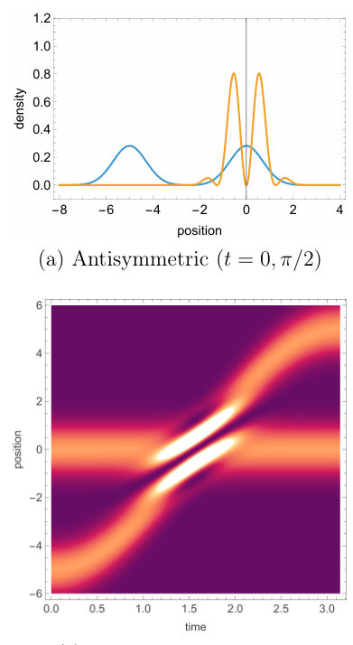
<figcaption class="paper-figure-caption"><b>Fig 4.</b> Figure 4: Exact analytical dynamics of superposition states within a harmonic oscillator potential. The panels illustrate a displaced coherent state wave packet colliding with a stationary ground-state wave packet. Panels (a) and (c) display the antisymmetric superposition, showcasing the persistent probability node at the origin during the collision event (t = π/2). Panels (b) and (d) display the symmetric superposition, demonstrating constructive interference at the collision center.</figcaption>
</figure>
<figure class="paper-figure-card">

<figcaption class="paper-figure-caption"><b>Fig 5.</b> Figure 5: Exact propagation of a reduced density matrix simulating an open quantum sys- tem coupled to a harmonic environment. Panel (a) plots the time-dependent decoherence function, illustrating the continuous loss of quantum coherence as the system evolves. Panel (b) shows the exact spatio-temporal probability density ρ(x, t) overlaid with the position center parameter xt (solid line). The analytical evaluation captures the exact spatial broadening and environmental damping dictated by the Caldeira-Leggett master equation.</figcaption>
</figure>
</div>

<p><strong>Summary.</strong> This paper introduces GWPTools, a specialized Wolfram Language framework designed to compute the exact time evolution of Gaussian wave packets. It provides a unified symbolic-numeric engine to model quantum dynamics in quadratic potentials, allowing for the exact calculation of complex observables like quantum potential and Bohmian trajectories. This tool serves as a rigorous benchmark for validating numerical methods across various quantum physics regimes.</p>
<p><strong>Why it may be interesting.</strong> This is highly relevant as it provides a powerful, exact analytical tool for studying non-equilibrium quantum dynamics, which is crucial for benchmarking advanced numerical solvers used in AMO physics and open quantum systems.</p>
<details>
<summary>Detailed structure</summary>
<p><strong>Main problem.</strong> The paper addresses the need for an exact, analytical framework to model complex time-dependent quantum phenomena, specifically bridging the gap between classical trajectories and full quantum mechanics for benchmarking purposes.</p>
<p><strong>Main result.</strong> The authors introduce GWPTools, a Wolfram Language framework that provides an exact symbolic-numeric engine for calculating Gaussian wave packet dynamics, enabling rigorous testing of various numerical methods.</p>
<p><strong>Method.</strong> The framework uses a unified symbolic-numeric architecture based on a 'parameter bus' to solve the coupled ODEs governing the time evolution of Gaussian wave packet parameters for quadratic potentials.</p>
<p><strong>Model / system.</strong> The primary model is the time-dependent Gaussian wave packet ($\Psi$), which is used to study quantum dynamics in various potentials, including free particles, harmonic oscillators, and general quadratic potentials $V(x, t) = V_0(t) + V_1(t)x + V_2(t)x^2$.</p>
<p><strong>Key observables.</strong> Arbitrary-order spatial/momentum derivatives, expectation values ($\langle x^n 
angle, \langle p^n 
angle$), probability density, Bohmian trajectories, Wigner function, and Wehrl entropy.</p>
<p><strong>Important parameters / regimes.</strong> The time-dependent parameters defining the Gaussian wave packet ($\alpha_t, x_t, p_t, \gamma_t$) and the coefficients of the quadratic potential ($V_0, V_1, V_2$).</p>
<p><strong>Assumptions / limitations.</strong> The core engine is restricted to external potentials that are exactly quadratic in space and time to guarantee purely symbolic evaluation, although experimental extensions are noted for piecewise functions.</p>
<p><strong>Paper structure.</strong> The paper introduces the GWPTools framework, details the exact analytical methods for calculating derivatives and expectation values, and then extends the application to quantum hydrodynamics, Bohmian trajectories, and phase-space representations.</p>
</details>
<details>
<summary>Abstract</summary>
<p>Gaussian wave packets provide an exact analytical foundation for modeling time-dependent quantum phenomena, effectively bridging the gap between classical trajectories and full quantum mechanics. We introduce GWPTools, a highly extensible Wolfram Language framework designed to compute exact time-dependent Gaussian wave packet dynamics using a unified symbolic-numeric architecture. Built upon a robust ``parameter bus'' and polymorphic dispatch, the software serves as an interactive pedagogical tool for exploring quantum theory and an exact algebraic engine for rigorously benchmarking numerical grid-based and trajectory methodologies. Version 1.0.0 focuses on exact time evolution in driven one-dimensional quadratic potentials. Native extensions into quantum hydrodynamics and phase space representations enable exact energy decompositions, analytical Bohmian trajectories, and symbolic derivations of quasi-probability distributions and information metrics. We demonstrate the framework's modular scalability by prototyping interference in superpositions, open-system decoherence, and coupled two-dimensional oscillators. Ultimately, these capabilities establish a versatile foundation for maximizing the reach of exact analytical modeling toward increasingly complex driven quantum systems.</p>
</details>
<p><sub><a href="#top">↑ back to top</a></sub></p>

<p><a id="paper-2610.18747"></a></p>
<h3 id="competing-delocalisation-and-localisation-induced-by-the-dipolar-tail-in-fragmented-lattice-gases"><a href="http://arxiv.org/abs/2610.18747v1">Competing delocalisation and localisation induced by the dipolar tail in fragmented lattice gases</a></h3>
<p><strong>Authors:</strong> Sabhyata Gupta, Adith Sai Aramthottil, Luis Santos<br>
<strong>Type:</strong> theory · <strong>Category:</strong> quantum gases · <strong>PDF:</strong> <a href="https://arxiv.org/pdf/2610.18747v1">https://arxiv.org/pdf/2610.18747v1</a><br>
<strong>Analysis basis:</strong> full PDF text, analyzed in chunks
<strong>Topic relevance:</strong> <code>analog quantum simulation</code> <strong>3/5</strong> · <code>scars &amp; prethermalization</code> <strong>3/5</strong> · <code>Frenkel-Kontorova</code> <strong>1/5</strong></p>
<div class="figure-strip-hint">↔ Scroll figures horizontally</div>
<div class="paper-figures-scroll">
<figure class="paper-figure-card">
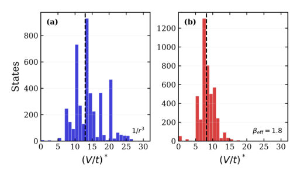
<figcaption class="paper-figure-caption"><b>Fig 1.</b> FIG. 2. Distribution of the crossover value (V/t)∗over all ini- tial states for which ∆¯η changes sign, for (a) the 1/r3 interac- tion and (b) the modified dipolar interaction with βeff = 1.8. The dashed vertical line in each panel marks the median, (V/t)∗ med = 13.0 for 1/r3 and 8.1 for βeff = 1.8. The larger NNN coupling for βeff = 1.8 shifts the distribution towards smaller (V/t)∗.</figcaption>
</figure>
<figure class="paper-figure-card">
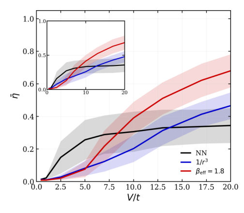
<figcaption class="paper-figure-caption"><b>Fig 2.</b> FIG. 1. Late-time inhomogeneity ¯η as a function of V/t for the NN model (black), the bare dipolar interaction 1/r3 (blue), and the modified dipolar interaction with βeff = 1.8 (red), for an L = 16, N = 8 chain with open boundary conditions. Solid lines show the average over all 4410 initial states in the NNN = 4 manifold, while shaded regions indicate the corre- sponding standard deviation. The NN result increases mono- tonically, whereas the dipolar models lie below it at smaller V/t and above it at larger V/t. The stronger NNN coupling for βeff = 1.8 shifts the crossover to smaller V/t and produces a larger inhomogeneity at strong coupling. The average is taken over τ ∈[900, 1000] ℏ/t....</figcaption>
</figure>
<figure class="paper-figure-card">

<figcaption class="paper-figure-caption"><b>Fig 3.</b> FIG. 3. Eigenstates and inter-manifold hybridisation for the L = 16, N = 8 chain. Panels (a) and (b) show the inverse participation ratio IPRµ of the full-Hamiltonian eigenstates as a function of the eigenenergy Eµ at V/t = 7, for (a) the NN model and (b) the bare 1/r3 interaction. The dashed line indicates the median IPR in each panel. At this intermediate coupling, the dipolar interaction yields a smaller median IPR, showing that the eigenstates are spread over a larger number of Fock configurations than in the NN model. Panel (c) quantifies the associated inter-manifold hybridisation through the excess standard deviation of the NN-bond number, ∆σNNN (see text). Results are shown for the...</figcaption>
</figure>
<figure class="paper-figure-card">
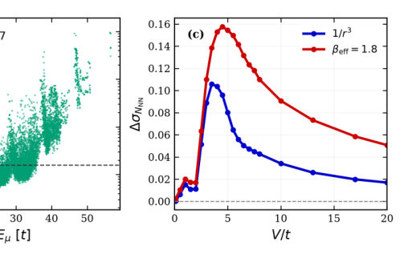
<figcaption class="paper-figure-caption"><b>Fig 4.</b> Figure 4 shows the eigenstates of the Hamiltonian pro- jected onto the NNN = 4 manifold, P4HP4. In the NN model, all Fock configurations within this manifold have the same interaction energy 4V . The NN interac- tion therefore leaves their degeneracy intact; within the projected Hamiltonian it contributes only an overall en- ergy shift. The corresponding eigenstates consequently remain strongly delocalised in the Fock basis, with low IPR, independently of V/t, as shown in Fig. 4(a). The dipolar tail changes this situation qualitatively. Already its leading contribution, V2NNNN, lifts the degeneracy between Fock configurations with different NNNN. As V/t increases, configurations with...</figcaption>
</figure>
<figure class="paper-figure-card">
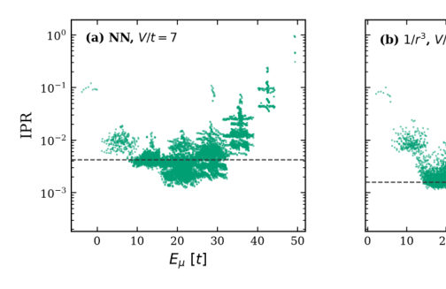
<figcaption class="paper-figure-caption"><b>Fig 5.</b> Figure 3(c) shows ∆σNNN for both dipolar interactions. It is positive and maximal at intermediate V/t ∼5, demon- strating that the dipolar tail keeps the state distributed over a broader range of NNN manifolds than in the NN model. At larger V/t, ∆σNNN decreases towards zero as inter-manifold hybridisation becomes suppressed in both models. The confinement-modified dipolar inter- action with βeff = 1.8 produces a larger ∆σNNN, showing that its stronger NNN coupling enhances the delocalising inter-manifold mechanism.</figcaption>
</figure>
</div>

<p><strong>Summary.</strong> This theoretical study examines how dipole-dipole interactions affect hard-core bosons in 1D lattices, revealing a non-monotonic competition between delocalisation and localisation. The interaction strength dictates a crossover point where the tail switches from enhancing delocalisation to promoting localization. This crossover is experimentally relevant for systems involving magnetic atoms.</p>
<p><strong>Why it may be interesting.</strong> This work directly addresses the dynamics of interacting quantum gases, particularly those involving dipole-dipole interactions relevant to ultracold atoms and polar molecules, providing a detailed picture of how long-range forces can stabilize or destabilize quantum coherence.</p>
<details>
<summary>Detailed structure</summary>
<p><strong>Main problem.</strong> The paper investigates how the long-range tail of dipole-dipole interactions modifies the dynamics of strongly interacting hard-core bosons in a one-dimensional lattice, focusing on the competition between delocalisation and localisation.</p>
<p><strong>Main result.</strong> The effect of the dipolar tail is non-monotonic with increasing interaction strength ($V/t$), causing a crossover from an enhancing delocalising role at intermediate ratios to a localising role at larger ratios.</p>
<p><strong>Method.</strong> The dynamics are studied using real-time evolution simulations, analyzing the system's fragmentation into manifolds defined by the number of nearest-neighbour bonds ($N_{\mathrm{NN}}$).</p>
<p><strong>Model / system.</strong> The system is modeled as hard-core bosons on an open 1D lattice governed by a Hamiltonian including nearest-neighbour hopping and long-range dipole-dipole interactions ($V_r \propto 1/r^3$ or confinement-modified).</p>
<p><strong>Key observables.</strong> Late-time spatial inhomogeneity ($ar{\eta}$), Inverse Participation Ratio (IPR), and the crossover scale $(V/t)^*$.</p>
<p><strong>Important parameters / regimes.</strong> The interaction-to-tunnelling ratio ($V/t$) and the confinement-modified interaction exponent ($eta_{	ext{eff}}$).</p>
<p><strong>Assumptions / limitations.</strong> The analysis assumes the existence of a generic crossover scale $(V/t)^*$ that dictates the transition between the two competing physical regimes.</p>
<p><strong>Figures summary.</strong> Figures compare the late-time inhomogeneity ($ar{\eta}$) for different interaction models (NN, bare dipolar, modified dipolar) as a function of $V/t$, demonstrating the crossover behavior.</p>
<p><strong>Paper structure.</strong> The paper analyzes the Hamiltonian, defines diagnostics ($ar{\eta}$, IPR), and then systematically explores the parameter space ($V/t$) to map out the non-monotonic crossover between inter-manifold delocalisation and intra-manifold localisation.</p>
</details>
<details>
<summary>Abstract</summary>
<p>We investigate how the long-range tail of dipole-dipole interactions modifies the dynamics of strongly interacting hard-core bosons in a one-dimensional lattice. In the nearest-neighbour model, large interactions generate an emergent Hilbert-space fragmentation into manifolds labelled by the number of nearest-neighbour bonds \(N_{\mathrm{NN}}\). The dipolar tail has a non-monotonic effect on this fragmented dynamics as the interaction-to-tunnelling ratio \(V/t\) is increased. At intermediate \(V/t\), it enhances delocalisation relative to the nearest-neighbour model by reducing the energetic detuning between neighbouring \(N_{\mathrm{NN}}\) manifolds and sustaining their hybridisation by hopping. At larger \(V/t\), the same tail lifts degeneracies within each manifold, beginning with the splitting associated with the next-nearest-neighbour bond number \(N_{\mathrm{NNN}}\), and promotes intra-manifold localisation and Hilbert-space shattering. The competition between these two effects produces a crossover from a delocalising to a localising role of the dipolar tail, visible in the late-time spatial inhomogeneity. This crossover occurs for nearly all initial states considered and persists at different fillings. Transverse confinement strengthens the short-range part of the dipolar tail and shifts the crossover to lower \(V/t\), bringing it into the regime relevant to current experiments with magnetic atoms and polar molecules.</p>
</details>
<p><sub><a href="#top">↑ back to top</a></sub></p>

<p><a id="paper-2610.17300"></a></p>
<h3 id="ghost-unitaries-for-loss-resilient-photonic-resource-state-generation"><a href="http://arxiv.org/abs/2610.17300v1">Ghost unitaries for loss-resilient photonic resource-state generation</a></h3>
<p><strong>Authors:</strong> Kevin J. Randles, Manuel H. Muñoz-Arias, Kevin Thompson<br>
<strong>Type:</strong> theory · <strong>Category:</strong> quantum information and computing · <strong>PDF:</strong> <a href="https://arxiv.org/pdf/2610.17300v1">https://arxiv.org/pdf/2610.17300v1</a><br>
<strong>Analysis basis:</strong> full PDF text, analyzed in chunks
<strong>Topic relevance:</strong> <code>interference shaping light</code> <strong>3/5</strong> · <code>methods for driven-dissipative</code> <strong>2/5</strong> · <code>quantum measurements</code> <strong>2/5</strong></p>
<div class="figure-strip-hint">↔ Scroll figures horizontally</div>
<div class="paper-figures-scroll">
<figure class="paper-figure-card">

<figcaption class="paper-figure-caption"><b>Fig 1.</b> FIG. 1. HOM-state generation in the (a) direct and (b) ghost implementations. In (a), the lossy beamsplitter acts on the delivered signal modes (top); in (b), the transposed beamsplitter acts on the heralding idler modes (bottom). For equal squeezing, both cases can be mapped onto the unified model in (c), with the implementation dependence captured by the lumped efficiencies ηs and ηi of Eq. (9).</figcaption>
</figure>
<figure class="paper-figure-card">
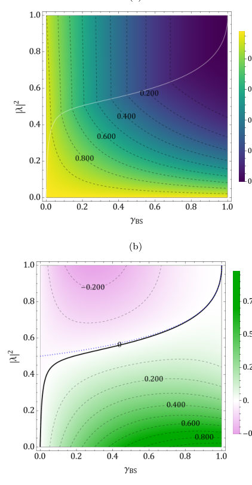
<figcaption class="paper-figure-caption"><b>Fig 2.</b> FIG. 2. HOM-state generation comparison for equal squeezing. (a) Maximum fidelity max(F(g) HOM, F(d) HOM) and (b) fidelity difference F(g) HOM−F (d) HOM versus squeezing strength |λ|2 and beamsplitter loss rate γBS = 1 −ηBS. Here we fix ηp = 0.99 and ηd = 0.98. The solid line [white in (a), black in (b)] marks F(g) HOM = F (d) HOM; the dotted blue line in (b) is the only-beamsplitter-loss locus of Eq. (25).</figcaption>
</figure>
<figure class="paper-figure-card">
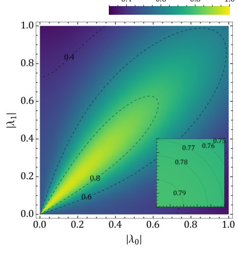
<figcaption class="paper-figure-caption"><b>Fig 3.</b> FIG. 3. HOM fidelity under unequal squeezing. Main panel: Ghost implementation fidelity as a function of the squeezing parameters |λ0,1| with ηp = 0.99, ηd = 0.98, γBS = 0.1, and arg(λ0/λ1) = 0.1. Inset: corresponding direct implementation fidelity using the same scale and axes. Both plots are symmetric under λ0 ↔λ1.</figcaption>
</figure>
<figure class="paper-figure-card">
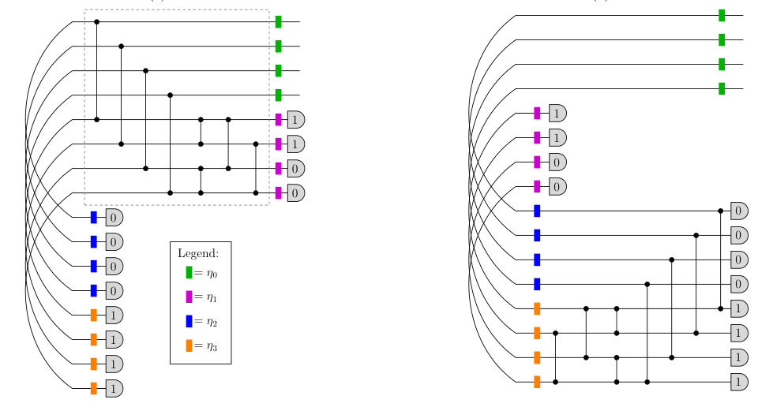
<figcaption class="paper-figure-caption"><b>Fig 4.</b> FIG. 4. Heralded Bell-state generation using the (a) direct and (b) ghost implementations. The boxed interferometer in (a) is the standard four-photon, eight-mode Bell-state-generation circuit; in the ghost implementation its transpose is applied to the idler modes. The lumped efficiencies η0, · · · η3 (see legend) have implementation-dependent values; see Eq. (28). The representative click patterns ⃗σ = (1100) and ⃗ι = (00001111) are shown.</figcaption>
</figure>
<figure class="paper-figure-card">
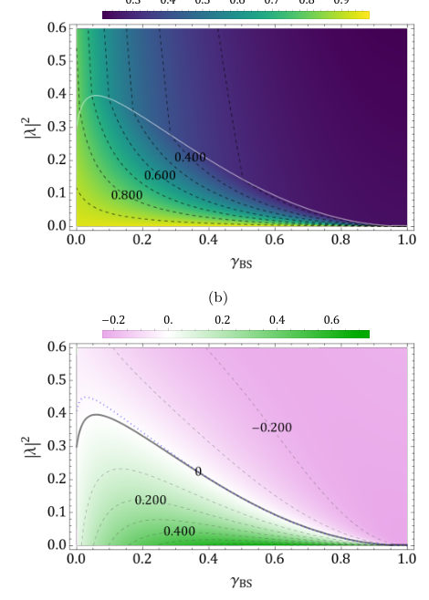
<figcaption class="paper-figure-caption"><b>Fig 5.</b> FIG. 5. Bell-state generation comparison for equal squeezing. (a) Maximum fidelity max(F(g) Bell, F(d) Bell) and (b) fidelity difference F(g) Bell −F (d) Bell versus |λ|2 and γBS. We fix ηp = 0.99, ηd = 0.98, and use a hybrid spatial- frequency model with low-loss transverse spatial beam- splitter, ηT = 0.99. The results are qualitatively similar if we take ηT = ηBS. The solid line marks F(g) Bell = F (d) Bell; the dotted blue line in (b) is the corresponding locus in the limit of only frequency-beamsplitter loss.</figcaption>
</figure>
</div>

<p><strong>Summary.</strong> This paper introduces 'ghost-unitary' techniques to improve the generation of entangled photonic resource states by relocating the required unitary transformation to the heralding modes. This method effectively mitigates the performance degradation caused by interferometric loss, leading to higher-fidelity states than direct methods. It provides a crucial theoretical tool for building robust quantum photonic circuits.</p>
<p><strong>Why it may be interesting.</strong> This work provides a concrete, mathematically derived technique to mitigate the detrimental effects of photon loss in linear-optical quantum computing architectures, which is a major bottleneck in photonic quantum information.</p>
<details>
<summary>Detailed structure</summary>
<p><strong>Main problem.</strong> Developing loss-resilient methods for generating high-quality entangled photonic resource states (RSG) for quantum information processing.</p>
<p><strong>Main result.</strong> The 'ghost-unitary' implementation, which applies the transformation to heralding modes, significantly outperforms direct implementations by suppressing false-positive heralding events caused by interferometric loss.</p>
<p><strong>Method.</strong> The authors utilize the transpose identity of multi-mode squeezed vacuum states to redefine the resource-generation interferometer operation from the resource modes to the heralding modes.</p>
<p><strong>Model / system.</strong> The work focuses on discrete-variable photonic quantum information processing using entangled few-photon states (Bell, GHZ states) generated probabilistically from multi-mode squeezed vacuum sources.</p>
<p><strong>Key observables.</strong> Fidelity of the generated resource state ($F$), Heralding Probability ($p$), and overall resource generation yield ($Y = p 	imes F$).</p>
<p><strong>Important parameters / regimes.</strong> Squeezing strength ($|\lambda|^2$), various loss parameters ($\eta_{BS}, \eta_p, \eta_d$), and the number of entangled qubits ($n$).</p>
<p><strong>Assumptions / limitations.</strong> The analysis primarily focuses on the regime where interferometric loss is the dominant imperfection, and the ghost implementation is defined by exploiting the bipartite system's transpose identity.</p>
<p><strong>Figures summary.</strong> Figures compare the fidelity and yield of direct versus ghost implementations for HOM state generation and teleportation, showing the parameter regimes where the ghost method provides an advantage.</p>
<p><strong>Paper structure.</strong> The paper introduces the ghost-unitary concept, analyzes its application to various resource states (Bell, GHZ), and provides detailed comparisons with direct methods for both state generation and subsequent quantum tasks like teleportation and fusion.</p>
</details>
<details>
<summary>Abstract</summary>
<p>Entangled few-photon states, such as Bell and Greenberger-Horne-Zeilinger (GHZ) states, are central resources for discrete-variable photonic quantum information processing. In many architectures, these states are generated probabilistically by first heralding single photons from biphoton sources and then interfering them in linear-optical circuits. In this work, we show that the entanglement structure of said biphoton sources can be directly exploited for noise-engineering to deliver higher quality resource states. Using the transpose identity of multi-mode squeezed vacuum states, we introduce "ghost-unitary" implementations in which the target resource-generation interferometer is applied to the heralding modes rather than to the delivered resource modes. When the dominant imperfection is interferometric loss, this relocation converts direct amplitude damping of the output into false-positive heralding events that require both higher-pair emission and photon loss. In the low-squeezing regime, these events are parametrically suppressed, yielding higher-fidelity conditional resource states. We analyze this mechanism for single-qubit states, two-photon NOON states, Bell states, and a family of $n$-qubit GHZ states, as well as for single-qubit teleportation and type-I-fusion-based resource growth. Across these examples, we delineate finite parameter regimes in which ghost-unitary implementations outperform direct implementations, with particular relevance to frequency-bin photonics where active linear-optical transformations can be relatively lossy. We also prove that, in the setting considered here, the direct implementation of the $n$-GHZ family delivers identically damped outputs: equivalent to the ideal state followed by uniform amplitude damping. This extends the known $n=2,3$ cases and provides a structural result of independent interest for photonic quantum information processing.</p>
</details>
<p><sub><a href="#top">↑ back to top</a></sub></p>

<p><a id="paper-2610.17943"></a></p>
<h3 id="wannierstm-efficient-superconducting-scanning-probe-spectroscopy-from-maximally-localized-wannier-functions"><a href="http://arxiv.org/abs/2610.17943v1">WannierSTM: Efficient superconducting scanning-probe spectroscopy from maximally localized Wannier functions</a></h3>
<p><strong>Authors:</strong> Oscar Moreno Segura, Dorye L. Esteras, Andrei Shumilin, Gonzalo Rivero-Carracedo, Riku Tuovinen, José J. Baldoví<br>
<strong>Type:</strong> theory · <strong>Category:</strong> other · <strong>PDF:</strong> <a href="https://arxiv.org/pdf/2610.17943v1">https://arxiv.org/pdf/2610.17943v1</a><br>
<strong>Analysis basis:</strong> full PDF text, analyzed in chunks
<strong>Topic relevance:</strong> <code>Keldysh / 2PI / non-Gaussian methods</code> <strong>3/5</strong> · <code>methods for driven-dissipative</code> <strong>3/5</strong> · <code>driven-dissipative phase transition</code> <strong>1/5</strong></p>
<div class="figure-strip-hint">↔ Scroll figures horizontally</div>
<div class="paper-figures-scroll">
<figure class="paper-figure-card">

<figcaption class="paper-figure-caption"><b>Fig 1.</b> Figure 1: a) Schematic of the transport setup consisting of a central region coupled to two electrodes. b) Close-up of the central region.</figcaption>
</figure>
<figure class="paper-figure-card">

<figcaption class="paper-figure-caption"><b>Fig 2.</b> Figure 2: Workflow of the WannierSTM simulation pipeline, showing preprocessing, Hamiltonian construction, transport calcu- lation, and post-processing steps. Dashed lines indicate optional paths. Wannier_functions and Orca_functions are activated depending on the type of input files and whether STM scanning is enabled, while Patch_wannier is activated when periodic Wannier Hamiltonians are used.</figcaption>
</figure>
<figure class="paper-figure-card">

<figcaption class="paper-figure-caption"><b>Fig 3.</b> Figure 3: (a) Spectral function, (b) current-voltage, and (c) differential conductance for the YSR model. Parameters: N = 50, t = 1, µ = 0, ∆= 0.1, Γ = 0.05, and β = 10. In panel (c), the dashed vertical lines are calculated using Equation (16).</figcaption>
</figure>
<figure class="paper-figure-card">

<figcaption class="paper-figure-caption"><b>Fig 4.</b> Figure 4: (a) Spectral function and (b) differential conductance for nanowires of different length. The model parameters are t = 1, µ = 0, ∆= 0.1, α = 0.5, and Vz = 0.25, corresponding to the topological phase. (c) Differential conductance for different values of the confining potential with N = 50 in the topologically trivial regime. Parameters: t = 1, µ = 2, ∆= 0.1, α = 0.5, and Vz = 1.2. In all cases, Γ = 0.01 and β = 10.</figcaption>
</figure>
<figure class="paper-figure-card">

<figcaption class="paper-figure-caption"><b>Fig 5.</b> Figure 5: Side view of the optimized crystal structures of (a) Fe3GaTe2 and (b) Fe2CoGaTe2 monolayers.</figcaption>
</figure>
</div>

<p><strong>Summary.</strong> This paper presents WannierSTM, a novel Python framework that efficiently simulates superconducting STM spectroscopy. It merges first-principles electronic structure (via MLWF) with the NEGF formalism to calculate transport properties. This allows for rapid, large-scale mapping of complex superconducting and magnetic phenomena at the atomic scale.</p>
<p><strong>Why it may be interesting.</strong> This work is highly relevant as it provides a powerful, efficient tool for simulating open quantum systems (the STM junction) in superconducting regimes, bridging complex many-body physics with practical computational methods.</p>
<details>
<summary>Detailed structure</summary>
<p><strong>Main problem.</strong> The paper addresses the computational challenge of simulating superconducting scanning tunneling microscopy (STM) spectroscopy using first-principles methods.</p>
<p><strong>Main result.</strong> It introduces WannierSTM, a unified and computationally efficient Python framework for rapid spectroscopic calculations in superconducting hybrid nanostructures.</p>
<p><strong>Method.</strong> The method combines maximally localized Wannier functions (MLWF) derived from DFT with the Nonequilibrium Green's Function (NEGF) formalism.</p>
<p><strong>Model / system.</strong> The model simulates an open quantum system consisting of a central superconducting region coupled to STM tip and substrate electrodes. Superconductivity is incorporated via an effective pairing potential in the Nambu-spinor formalism.</p>
<p><strong>Key observables.</strong> Current-voltage characteristics (I-V) and differential conductance (dI/dV) spectra.</p>
<p><strong>Important parameters / regimes.</strong> Low-bias STM/STS regimes; systems exhibiting spin-orbit coupling, magnetic textures, and spin polarization.</p>
<p><strong>Assumptions / limitations.</strong> The calculation uses the wide-band limit approximation for electrode coupling and treats superconductivity at a mean-field level without self-consistent feedback from non-equilibrium currents.</p>
<p><strong>Figures summary.</strong> Figure 1 schematically illustrates the transport setup, showing the central region coupled to two electrodes (L and R).</p>
<p><strong>Paper structure.</strong> The paper builds a theoretical framework by combining MLWF-based Hamiltonians with NEGF theory. It derives transport quantities analytically, avoiding explicit energy integrations, and demonstrates its application to various superconducting and magnetic systems.</p>
</details>
<details>
<summary>Abstract</summary>
<p>We present a Python-based program that combines maximally localized Wannier functions-based first-principles electronic structure with the nonequilibrium Green's function formalism to enable efficient simulations of scanning tunneling microscopy (STM). The workflow builds upon standard density functional theory packages to construct compact transport Hamiltonians that preserve the properties of realistic materials. Superconductivity is incorporated via an effective pairing potential within the Nambu-spinor formalism, while coupling to the STM tip and substrate electrodes is treated using the wide-band limit approximation. Within this formulation, transport quantities such as current-voltage characteristics and differential conductance are evaluated in a closed analytical form. This avoids explicit numerical energy integrations and enables rapid spectroscopic calculations over broad parameter spaces. The framework provides a unified and computationally efficient approach for modeling superconducting hybrid nanostructures with spin-orbit coupling, magnetic textures, and spin polarization. Representative applications in spin chains, two-dimensional and molecular magnets on a superconductor demonstrate its robust capabilities for both simple model systems and realistic ab initio molecular structures relevant to modern STM experiments.</p>
</details>
<p><sub><a href="#top">↑ back to top</a></sub></p>

<p><a id="paper-2610.17499"></a></p>
<h3 id="an-aubry-andre-localized-optical-lattice-clock"><a href="http://arxiv.org/abs/2610.17499v1">An Aubry-André localized optical lattice clock</a></h3>
<p><strong>Authors:</strong> Shuo Ma, Anke Stölzel, Bennett Christensen, Zhuoli Ding, Dhruva Ganapathy, Andrew Householder, Genyue Liu, Shimon Kolkowitz<br>
<strong>Type:</strong> both · <strong>Category:</strong> other · <strong>PDF:</strong> <a href="https://arxiv.org/pdf/2610.17499v1">https://arxiv.org/pdf/2610.17499v1</a><br>
<strong>Analysis basis:</strong> full PDF text, analyzed in chunks
<strong>Topic relevance:</strong> <code>analog quantum simulation</code> <strong>3/5</strong> · <code>Frenkel-Kontorova</code> <strong>1/5</strong> · <code>interference shaping light</code> <strong>1/5</strong> · <code>quantum measurements</code> <strong>1/5</strong></p>
<div class="figure-strip-hint">↔ Scroll figures horizontally</div>
<div class="paper-figures-scroll">
<figure class="paper-figure-card">
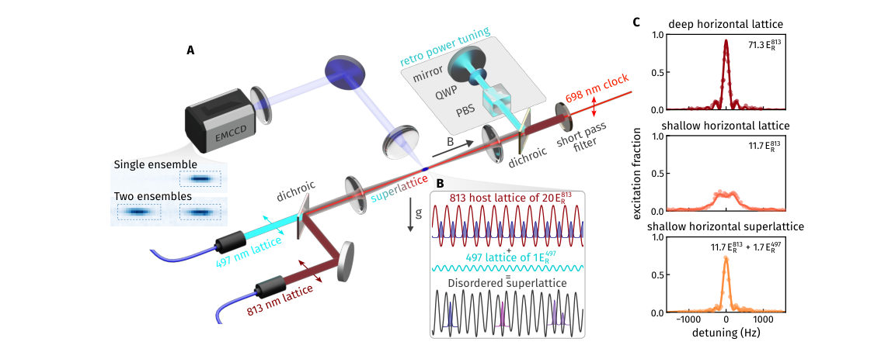
<figcaption class="paper-figure-caption"><b>Fig 1.</b> FIG. 1. A horizontal strontium optical lattice clock with two collinear lattices at incommensurate magic wavelengths and variable depths. (A) Schematic of the setup confining 87Sr in a horizontal one-dimensional optical lattice formed by 813 nm light co-aligned with a 497 nm lattice with tunable power in the retro-reflected beam allowing for a dipole trap for radial confinement, and a variable secondary lattice depth. Clock laser light propagates axially along the lattice, interrogating either a single ensemble of atoms via Rabi spectroscopy, or two ensembles via differential Ramsey spectroscopy. (B) (Top) Potential for an 813 nm lattice with a depth of 20 E813 R in dark red, with the...</figcaption>
</figure>
<figure class="paper-figure-card">
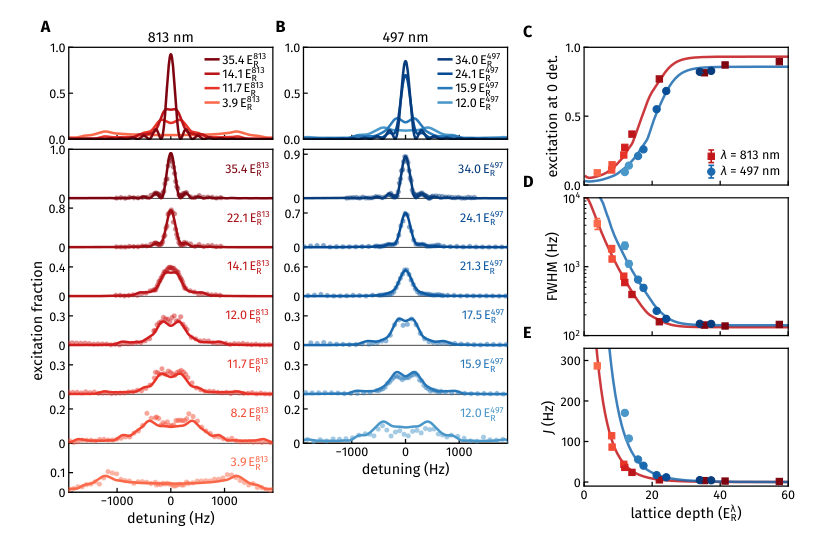
<figcaption class="paper-figure-caption"><b>Fig 2.</b> FIG. 2. Tunneling-induced broadening of Rabi spectra in individual 1D horizontal lattices, at 813 nm and 497 nm. (A)&amp;(B) Excitation fraction as a function of clock laser detuning for the 813 nm (left, red points) and 497 nm (right, blue points) lattices at various lattice depths, following a 𝜋–pulse with Ω = 2𝜋× 104 Hz and 2𝜋× 111 Hz, respectively. The theoretical curves (solid lines in matching colors) are overlaid with experimental data (round markers). The topmost panels summarize all spectra shown below on a common excitation fraction scale. (C) On-resonance excited-state fraction versus lattice depth for the 813 nm (red squares) and 497 nm (blue circles) lattices. Points are...</figcaption>
</figure>
<figure class="paper-figure-card">
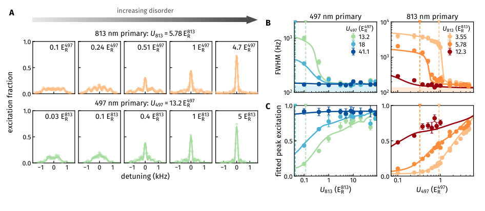
<figcaption class="paper-figure-caption"><b>Fig 3.</b> FIG. 3. Localization induced recovery of the clock spectrum. (A) Excitation fraction in 3P0 versus clock detuning for the 813 nm primary lattice at 5.78 E813 R (orange points, top row) and the 497 nm primary lattice at 13.2 E497 R (green points, bottom row), for increasing secondary lattice depth. The lineshape predicted by the model is shown by the solid lines in matching color. Increasing the secondary lattice depth narrows the broadened spectrum and restores the carrier. (B)&amp;(C) FWHM and on-resonance excitation, respectively, versus secondary lattice depth for different primary lattice depths. The measured Rabi spectra (points) and calculated spectra (solid lines) are fitted with a...</figcaption>
</figure>
<figure class="paper-figure-card">
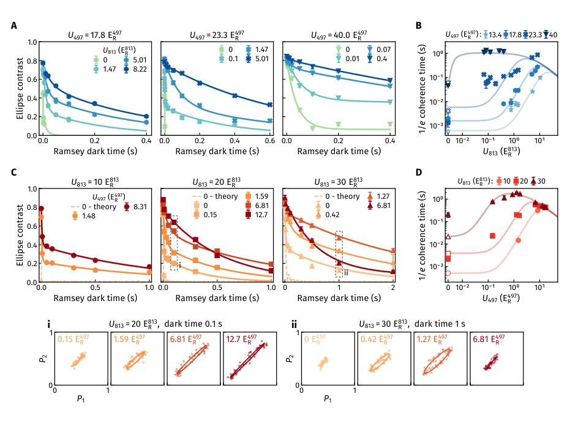
<figcaption class="paper-figure-caption"><b>Fig 4.</b> FIG. 4. Localization induced increase in coherence times in differential Ramsey spectroscopy. A differential Ramsey measurement repeated 20 times with varying phase between the two 𝜋/2–pulses maps out an ellipse per fixed Ramsey dark time when plotting excitation fraction in ensemble 1 parametrically over excitation fraction in ensemble 2. (A&amp;C) Measured ellipse contrast for three exemplary primary lattice depths and different disorder strength over Ramsey dark time. The contrast at a given primary lattice depth increases with disorder up to some threshold, until other decoherence effects dominate. Error bars represent the ±1𝜎uncertainties on the ellipse fit extracted from jackknifing....</figcaption>
</figure>
</div>

<p><strong>Summary.</strong> This paper demonstrates that introducing a secondary, quasiperiodically modulated optical lattice can induce Aubry-André localization in an atomic clock system. This localization effectively suppresses detrimental atomic tunneling, which is a major source of decoherence in shallow lattices. The results show a significant recovery of the narrow, ideal clock transition spectrum and greatly extended coherence times, paving the way for next-generation space-based atomic clocks.</p>
<p><strong>Why it may be interesting.</strong> This work provides a concrete, experimentally verifiable mechanism (AA localization) to control quantum coherence in a highly sensitive quantum sensor platform (optical lattice clocks), bridging condensed matter localization physics with precision measurement.</p>
<details>
<summary>Detailed structure</summary>
<p><strong>Main problem.</strong> Operating optical lattice clocks in space requires suppressing atomic tunneling between lattice sites to maintain coherence and achieve high precision.</p>
<p><strong>Main result.</strong> Implementing Aubry-André localization in a bichromatic optical lattice restores a narrow, Fourier-limited clock spectrum and improves Ramsey coherence times by up to two orders of magnitude.</p>
<p><strong>Method.</strong> The authors model the system using the Aubry-André Hamiltonian, simulating Rabi spectra and coherence decay by varying lattice depths and introducing a secondary lattice modulation.</p>
<p><strong>Model / system.</strong> The system uses $^{87}	ext{Sr}$ atoms in a bichromatic optical lattice formed by two magic-wavelength lasers, emulating free fall. The physics is governed by the Aubry-André Hamiltonian, which describes the transition from a delocalized Bloch state to an exponentially localized state when a secondary lattice is introduced.</p>
<p><strong>Key observables.</strong> Rabi spectra (measuring spectral narrowing), Ramsey coherence times ($ au$), and the on-resonance excitation fraction.</p>
<p><strong>Important parameters / regimes.</strong> The ratio of lattice wavelengths ($eta$), the modulation amplitude ($\Delta$), and the lattice depths ($U_{813}, U_{497}$).</p>
<p><strong>Assumptions / limitations.</strong> The AA Hamiltonian is derived by perturbatively projecting the secondary lattice modulation onto the lowest band of the primary lattice. The analysis also considers the regime where the secondary lattice acts as a weak modulation.</p>
<p><strong>Figures summary.</strong> Figures show the transition of Rabi spectra from broadened, tunneling-limited spectra to narrow, Fourier-limited spectra upon applying AA localization. Other figures detail the temperature dependence of motional line pulling shifts.</p>
<p><strong>Paper structure.</strong> The paper first establishes the problem of tunneling in space-based clocks. It then introduces and models the AA localization technique using a bichromatic lattice. The core of the work involves demonstrating the recovery of narrow spectral features and long coherence times by analyzing Rabi spectra and coherence decay rates.</p>
</details>
<details>
<summary>Abstract</summary>
<p>Optical lattice clocks in space could improve satellite navigation systems and enable new tests of fundamental physics, including gravitational-wave detection and tests of relativity. In microgravity, atoms can tunnel to degenerate neighboring lattice sites, broadening the clock transition and limiting coherence times. We demonstrate Aubry-André localization in a bichromatic optical lattice formed by two magic-wavelength lasers, suppressing tunneling in a horizontal lattice clock emulating free fall. We recover a Fourier-limited clock Rabi spectrum and measure Ramsey coherence times of up to 2 s in shallow lattices, with up to 100-fold improvement over the delocalized regime. These results establish Aubry-André localization as a practical route to controlling tunneling in future space-based clocks, and open a path to operating terrestrial clocks at shallower lattice depths.</p>
</details>
<p><sub><a href="#top">↑ back to top</a></sub></p>

<p><a id="paper-2610.18681"></a></p>
<h3 id="explicitly-correlated-ground-states-with-a-feedback-free-variational-hybrid-algorithm"><a href="http://arxiv.org/abs/2610.18681v1">Explicitly correlated ground states with a feedback-free variational hybrid algorithm</a></h3>
<p><strong>Authors:</strong> Benjamin Corbett, Akimasa Miyake<br>
<strong>Type:</strong> both · <strong>Category:</strong> strongly correlated electrons · <strong>PDF:</strong> <a href="https://arxiv.org/pdf/2610.18681v1">https://arxiv.org/pdf/2610.18681v1</a><br>
<strong>Analysis basis:</strong> full PDF text, analyzed in chunks
<strong>Topic relevance:</strong> <code>analog quantum simulation</code> <strong>3/5</strong> · <code>QC/QI experiment</code> <strong>2/5</strong> · <code>quantum measurements</code> <strong>1/5</strong></p>
<div class="figure-strip-hint">↔ Scroll figures horizontally</div>
<div class="paper-figures-scroll">
<figure class="paper-figure-card">

<figcaption class="paper-figure-caption"><b>Fig 1.</b> FIG. 1. Transcorrelated momentum-space DMRG with the Gutzwiller factor eJD produces the approximate ground state |ϕ⟩and nonvariational energy Etc. A quantum processor prepares |ϕ⟩, rotates it to real space, and measures in fixed diagonal and hopping bases. The samples are calibrated to reproduce known MPS expectation values and reused to optimize arbitrary real-space diagonal correlators Cθ entirely in classical post-processing, without a quantum–classical feedback loop.</figcaption>
</figure>
<figure class="paper-figure-card">

<figcaption class="paper-figure-caption"><b>Fig 2.</b> FIG. 2. (a) Transcorrelated energy Etc, sampled explicitly correlated energy Eec, and the minimum of its second-order Taylor approximation E(2) ec , Eq. (4), for the one-parameter Gutzwiller correlator versus bond dimension χ for the spin-blocked (SB) and spin-interleaved (SI) orderings. (b) Relative Eec errors for the Gutzwiller, 59-parameter, and 103-parameter correlators and for a Gutzwiller correlator on a non-transcorrelated (J = 0) reference, which barely improves on direct DMRG (not shown). (c) Median and central 68% interval from partitioning 157 million samples for the χ = 1024 SI MPS into experiments of varying size, with and without calibration. Horizontal lines mark the exact...</figcaption>
</figure>
<figure class="paper-figure-card">

<figcaption class="paper-figure-caption"><b>Fig 3.</b> FIG. 3. Relative width of 95% bootstrap confidence inter- vals versus total samples M = M (d) + 4NM (s) for raw and calibrated (cal.) energies from χ = 4 SB MPSs with the Gutzwiller correlator. Widths are divided by the reference ground-state energy magnitude, from exact diagonalization for 4 × 4 and auxiliary-field QMC for 6 × 6 [34]. The alloca- tion is M (d) : M (s) = 122 : 3. Plotted budgets have at least 95% successful replicates; dashed power-law fits use M ≥106.</figcaption>
</figure>
<figure class="paper-figure-card">
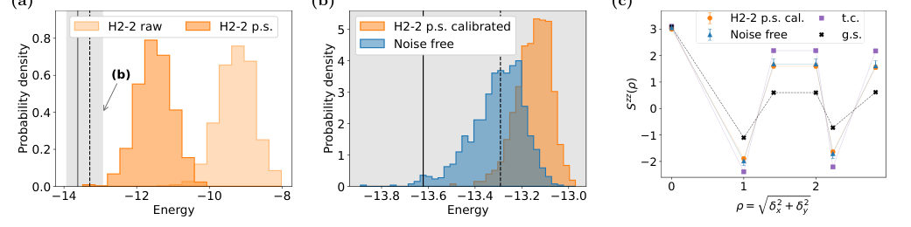
<figcaption class="paper-figure-caption"><b>Fig 4.</b> FIG. 4. (a) Energy bootstrap distributions from raw and particle-number-postselected (p.s.) H2-2 data without calibration. (b) Postselected, calibrated hardware data and 1,000 calibrated noise-free experiments matched to the retained sample count in every measurement setting. (c) The z-component of the spin correlations from postselected and calibrated H2-2 data, matched- sample noise-free experiments, the biorthogonal transcorrelated MPS (t.c.), and the exact ground state (g.s.), averaged over displacements of length ρ. Solid and dashed lines in (a) and (b) mark the exact ground-state and full-sample noise-free energies.</figcaption>
</figure>
<figure class="paper-figure-card">

<figcaption class="paper-figure-caption"><b>Fig 5.</b> FIG. 5. The explicitly correlated energy landscape with the Gutzwiller correlator, eθD, for the χ = 1024 SI MPS. Shown are the infinite-sample limit Eec, M →∞, the second-order Taylor approximation E(2) ec , and ten randomly selected exper- iments each using 314,000 samples with and without calibra- tion. The horizontal line is the exact ground-state energy.</figcaption>
</figure>
</div>

<p><strong>Summary.</strong> This work introduces a novel, feedback-free variational hybrid algorithm to calculate ground states for strongly correlated electron models like the Fermi-Hubbard model. By separating the quantum state preparation (MPS in momentum space) from the variational optimization (classical post-processing), the authors overcome a fundamental basis mismatch. The method demonstrates high accuracy on quantum hardware, making it a promising resource-efficient tool for quantum simulation.</p>
<p><strong>Why it may be interesting.</strong> The development of a feedback-free hybrid quantum algorithm for strongly correlated systems is crucial for scaling quantum simulation beyond current hardware limitations, offering a path to variational optimization without iterative quantum feedback.</p>
<details>
<summary>Detailed structure</summary>
<p><strong>Main problem.</strong> The paper addresses the challenge of accurately simulating strongly correlated electron systems by incorporating explicitly correlated ground states while resolving the fundamental mismatch between momentum-space reference states and real-space correlators.</p>
<p><strong>Main result.</strong> They propose and demonstrate a feedback-free variational hybrid algorithm that achieves a low relative ground-state energy error (down to 3.5% with calibration) on a 32-qubit quantum processor for the 2D Fermi-Hubbard model.</p>
<p><strong>Method.</strong> The method uses a quantum processor to prepare a low-entanglement momentum-space Matrix Product State (MPS), rotates it to real space, and then optimizes the correlator parameters entirely in classical post-processing, avoiding quantum-classical feedback.</p>
<p><strong>Model / system.</strong> The primary model is the fully periodic 2D Fermi–Hubbard model, described by a Hamiltonian involving hopping ($t$) and on-site repulsion ($U$). The simulation is benchmarked on a $4 	imes 4$ lattice using 32 qubits on a quantum hardware platform.</p>
<p><strong>Key observables.</strong> Ground-state energy ($E_{gs}$), relative ground-state energy error, and spin correlation observables ($S_{zz}(
ho)$).</p>
<p><strong>Important parameters / regimes.</strong> Bond dimension ($\chi=4$), lattice size ($4 	imes 4$), and the ratio $U/t=4$.</p>
<p><strong>Assumptions / limitations.</strong> The transcorrelated energy is non-variational, and the algorithm relies on classical post-processing for variational optimization, avoiding quantum-classical feedback loops.</p>
<p><strong>Figures summary.</strong> Figures compare the convergence of transcorrelated vs. explicitly correlated energies, show the impact of calibration on energy error estimates, and compare correlation observables across different simulation methods.</p>
<p><strong>Paper structure.</strong> The paper introduces the theoretical mismatch, details the hybrid algorithm flow (Transcorrelated DMRG $
ightarrow$ Quantum Sampling $
ightarrow$ Classical Minimization), presents results on the Fermi-Hubbard model, and compares its resource scaling favorably against other quantum simulation techniques.</p>
</details>
<details>
<summary>Abstract</summary>
<p>Explicitly correlated methods, which represent dominant short-range correlations by a diagonal Jastrow-type correlator, are designed to accurately describe systems of strongly correlated electrons, such as the fully periodic 2D Fermi--Hubbard model. However, as the reference state is compact in momentum space whereas the correlator acts naturally in real space, there is a fundamental mismatch of bases that classical algorithms resolve only by restricting the reference or the correlator. Here we propose a hybrid algorithm in which a quantum processor prepares a low-entanglement momentum-space matrix product state (MPS), precomputed classically by the transcorrelated method at the cost of a nonvariational energy, rotates it to real space, and measures in bases fixed by the Hamiltonian. Because the measurement bases are independent of the correlator, the correlator can be variationally optimized entirely in classical post-processing with no quantum-classical feedback loop. We demonstrate our algorithm on 32 qubits of Quantinuum's H2-2 with a bond-dimension-4 MPS for the half-filled $4 \times 4$ lattice and achieve a relative ground-state energy error of $16 \pm 4\%$ after postselection, reduced to $3.5 \pm 0.5\%$ by calibration using low-order moments from the MPS. Compared with other feedback-free hybrid algorithms, even under generous assumptions, our method requires fewer samples than quantum-selected configuration interaction and fewer two-qubit gates than quantum Krylov methods.</p>
</details>
<p><sub><a href="#top">↑ back to top</a></sub></p>

<p><a id="paper-2610.18712"></a></p>
<h3 id="pulsus-direct-frequency-domain-multidimensional-spectroscopy-beyond-the-impulsive-rotating-wave-approximation"><a href="http://arxiv.org/abs/2610.18712v1">PULSUS: Direct Frequency-Domain Multidimensional Spectroscopy Beyond the Impulsive Rotating-Wave Approximation</a></h3>
<p><strong>Authors:</strong> Alfonso Castillo-Gonzolez, Eric R. Bittnre<br>
<strong>Type:</strong> theory · <strong>Category:</strong> other · <strong>PDF:</strong> <a href="https://arxiv.org/pdf/2610.18712v1">https://arxiv.org/pdf/2610.18712v1</a><br>
<strong>Analysis basis:</strong> full PDF text, analyzed in chunks
<strong>Topic relevance:</strong> <code>methods for driven-dissipative</code> <strong>3/5</strong> · <code>Keldysh / 2PI / non-Gaussian methods</code> <strong>1/5</strong> · <code>correlated / nonlocal dissipation</code> <strong>1/5</strong> · <code>driven-dissipative phase transition</code> <strong>1/5</strong></p>
<div class="figure-strip-hint">↔ Scroll figures horizontally</div>
<div class="paper-figures-scroll">
<figure class="paper-figure-card">

<figcaption class="paper-figure-caption"><b>Fig 1.</b> FIG. 1. Overview of the PULSUS direct frequency-domain formulation and the controlled approximation hierarchy. (a) An open-system molecular model specified by H, {Lk}, µ, and ρ0 is represented in Liouville space and evaluated directly at requested spectral coordinates using Liouvillian resolvents and finite-pulse dressing operators. The representative spectrum shown is obtained from the full finite-pulse calculation. The plotted energy coordinates are related to the angular-frequency variables by Ej = ℏωj. (b) Hierarchy of models used to separate the physical approximations. Model A retains finite-width pulses and the complete interaction superoperator V . Model B applies the rotating-wave...</figcaption>
</figure>
<figure class="paper-figure-card">

<figcaption class="paper-figure-caption"><b>Fig 2.</b> FIG. 2. External validation of the finite-pulse implementation against the analytical Gaussian-pulse benchmark of Smallwood et al. at waiting time T = 2πσ. (a) Magnitude of the analytical reference spectrum. (b) Corresponding UF2 result. (c) PULSUS Model B finite-pulse RWA result. The spectra in panels (a)–(c) are normalized by the maximum magnitude of the analytical spectrum. (d) Pointwise discrepancy between UF2 and the analytical result, shown as log10(|∆S|/ max |Sana|); the relative Frobenius discrepancy is 0.343%. (e) Corresponding discrepancy for PULSUS Model B, with relative Frobenius discrepancy 0.000733%. The frequency axes are expressed in units of the characteristic frequency ω0....</figcaption>
</figure>
<figure class="paper-figure-card">

<figcaption class="paper-figure-caption"><b>Fig 3.</b> FIG. 3. Targeted frequency sampling of the finite-pulse nonrephasing spectrum for the coupled-dimer benchmark. (a) Dense 641 × 641 reference spectrum. (b) Reconstruction from a uniform global grid with N = 3721 sampled coordinates, giving ϵrec = 21.3%. (c) Reconstruction obtained from the structured local-refinement strategy with the same coordinate budget, giving ϵrec = 3.24%. Panels (a)–(c) show the response magnitude normalized by the maximum of the dense reference spectrum. (d) Initial 21 × 21 survey used to identify the spectrally active region. The white contour indicates the 10% magnitude threshold and the dashed rectangle shows the padded target window defined in Eq. (82). (e)...</figcaption>
</figure>
<figure class="paper-figure-card">
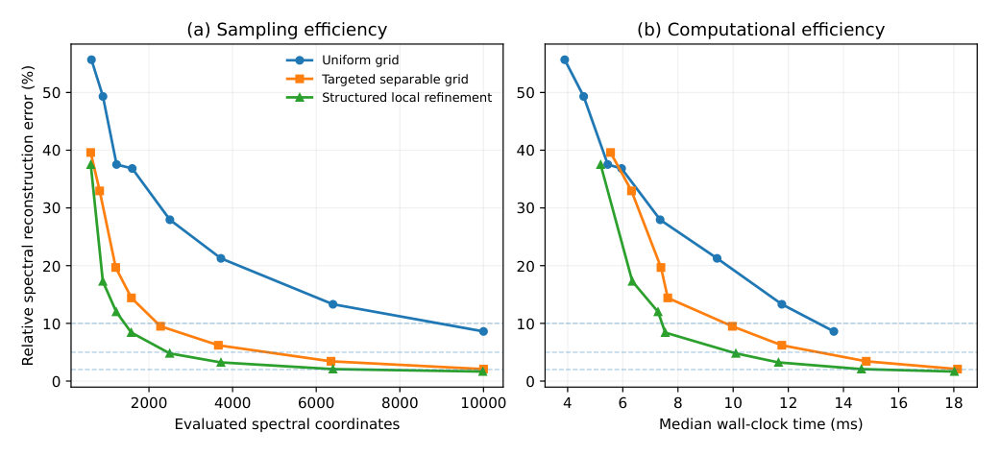
<figcaption class="paper-figure-caption"><b>Fig 4.</b> FIG. 4. Sampling and computational efficiency of the arbitrary-coordinate finite-pulse calculation. (a) Relative complex spectral reconstruction error, Eq. (83), as a function of the number of evaluated spectral coordinates for the uniform global grid, targeted separable grid, and structured local-refinement strategy. (b) The same reconstruction error plotted against the median wall-clock time required to obtain the sampled spectrum. Horizontal dashed lines indicate representative reconstruction errors of 10%, 5%, and 2%. Near the 10% level, the uniform calculation requires 8649 coordinates and 13.87 ms, whereas the structured local-refinement strategy reaches 9.10% error using 1392...</figcaption>
</figure>
<figure class="paper-figure-card">

<figcaption class="paper-figure-caption"><b>Fig 5.</b> FIG. 5. Approximation-regime map for the coupled-dimer model as a function of electronic coupling J and pulse intensity FWHM. The color scale shows the combined rephasing and nonrephasing relative discrepancy defined in Sec. II, on a logarithmic scale. (a) A −B: error introduced by the rotating-wave approximation while retaining finite-pulse Liouvillian dressing. (b) B −C: error introduced by neglecting molecular evolution during the pulse envelopes. (c) C −D: error associated with removing the finite spectral bandwidth and taking the impulsive limit. (d) A −D: total discrepancy between the full finite-pulse model and the impulsive-RWA description. Black contours indicate relative errors of...</figcaption>
</figure>
</div>

<p><strong>Summary.</strong> This paper introduces PULSUS, a novel direct frequency-domain method for calculating nonlinear molecular response in open quantum systems. It allows researchers to systematically compare the accuracy of various approximations, such as the Rotating-Wave Approximation and the impulsive limit. The results show that these approximations are not universally valid and must be tested independently for quantitative spectral interpretation.</p>
<p><strong>Why it may be interesting.</strong> This work provides a powerful, systematic computational tool to rigorously test the validity and limitations of standard approximations (like RWA) in complex, non-equilibrium quantum optical spectroscopy.</p>
<details>
<summary>Detailed structure</summary>
<p><strong>Main problem.</strong> The paper addresses the need for a direct frequency-domain framework to calculate multidimensional spectroscopy for open quantum systems, moving beyond the limitations of the impulsive rotating-wave approximation (RWA).</p>
<p><strong>Main result.</strong> The authors demonstrate that the total error from approximations (RWA, finite pulse duration) is nonmonotonic, and the RWA and impulsive approximations cannot be assumed to improve simultaneously, necessitating direct comparison.</p>
<p><strong>Method.</strong> They introduce PULSUS, which calculates the third-order response directly in the frequency domain using Liouvillian resolvents, allowing for systematic comparison across various approximations.</p>
<p><strong>Model / system.</strong> The system involves open quantum dynamics governed by a Lindblad master equation, which is mapped onto Liouville space. The calculation models molecular response to time-dependent Gaussian pulses.</p>
<p><strong>Key observables.</strong> Third-order correlation functions ($R^{(3)}$) and their frequency-domain counterparts, $M^{(3)}(\omega_3, T, \omega_1)$.</p>
<p><strong>Important parameters / regimes.</strong> Pulse duration ($   au_{FWHM}$), waiting time ($T$), and the spectral coordinates ($\omega_1, \omega_3$).</p>
<p><strong>Assumptions / limitations.</strong> The framework assumes the separated-pulse regime, treats the field interaction perturbatively, and utilizes a time-independent field-free Liouvillian.</p>
<p><strong>Figures summary.</strong> Figures illustrate pointwise spectral discrepancies between the full finite-pulse model and the impulsive-RWA model across different pulse durations, highlighting the failure of approximations.</p>
<p><strong>Paper structure.</strong> The paper develops the theoretical framework by defining the Liouvillian resolvent, deriving the mixed frequency-time response equation, and then systematically applying and comparing four distinct approximation models (Model A through Model D) to diagnose the sources of error.</p>
</details>
<details>
<summary>Abstract</summary>
<p>We introduce PULSUS, a direct frequency-domain framework for multidimensional spectroscopy of open quantum systems beyond the impulsive rotating-wave approximation. Coherence-frequency intervals are represented through Liouvillian resolvents, while finite Gaussian pulses are incorporated through operator-valued functions of the field-free Liouvillian. This enables direct evaluation on Cartesian grids or arbitrary spectral coordinates while retaining molecular evolution during the pulse envelopes and, when required, the complete light--matter interaction.   The implementation is validated against analytical and independent time-domain benchmarks and supports targeted spectral sampling that reduces the number of evaluated coordinates when the response is spectrally localized. A controlled hierarchy of finite-pulse, rotating-wave, short-pulse, and impulsive models separates the errors introduced by each approximation. For a coupled electronic dimer, the total impulsive-RWA error is nonmonotonic in pulse duration: an intermediate regime provides the highest accuracy, whereas ultrashort pulses expose coupling-enabled beyond-RWA pathways and longer pulses develop substantial finite-pulse corrections. These results show that the impulsive and rotating-wave approximations cannot be assumed to improve simultaneously and should be tested when quantitatively interpreting multidimensional spectra. PULSUS provides a direct frequency-domain framework for carrying out that comparison.</p>
</details>
<p><sub><a href="#top">↑ back to top</a></sub></p>

<p><a id="paper-2610.18506"></a></p>
<h3 id="directed-percolation-in-higher-order-social-dilemmas"><a href="http://arxiv.org/abs/2610.18506v1">Directed percolation in higher-order social dilemmas</a></h3>
<p><strong>Authors:</strong> Pablo Villegas, Sandro Meloni<br>
<strong>Type:</strong> theory · <strong>Category:</strong> statistical mechanics · <strong>PDF:</strong> <a href="https://arxiv.org/pdf/2610.18506v1">https://arxiv.org/pdf/2610.18506v1</a><br>
<strong>Analysis basis:</strong> full PDF text, analyzed in chunks
<strong>Topic relevance:</strong> <code>non-equilibrium universality</code> <strong>3/5</strong> · <code>Keldysh / 2PI / non-Gaussian methods</code> <strong>1/5</strong> · <code>driven-dissipative phase transition</code> <strong>1/5</strong></p>
<div class="figure-strip-hint">↔ Scroll figures horizontally</div>
<div class="paper-figures-scroll">
<figure class="paper-figure-card">

<figcaption class="paper-figure-caption"><b>Fig 1.</b> Figure 1. Microscopic models and mean-field phase diagram. (A) Higher-order game: players on a hypergraph play pairwise games on 2-hyperedges and three-player games on 3-hyperedges, and a focal player i copies a neighbor j with the Fermi probability f(πj −πi). The tables give the payoffs of a cooperator and of a defector as functions of the strategies of their co-players. (B) Pairwise game with short-lived memory, Eq. (7), in which every event involves at most two entities. Binary encounters create short-lived memories (mediators) that decay at rate ν; the memory X facilitates cooperation, whereas Z and Y inhibit it. Imitation acts at rates (1 ± g1)/2, with a bias g1 toward cooperation. (C)...</figcaption>
</figure>
<figure class="paper-figure-card">
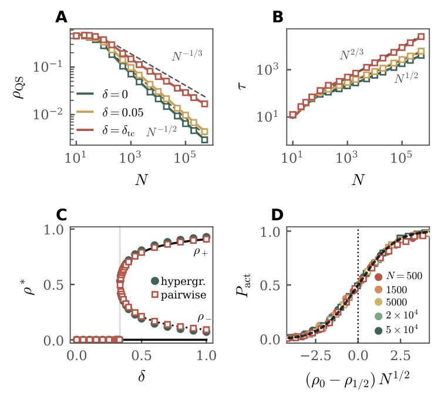
<figcaption class="paper-figure-caption"><b>Fig 2.</b> Figure 2. Mean field. (A) Quasistationary density and (B) lifetime at S = 0 versus population size, 10 ≤N ≤5 × 105. Lines: exact QS solution of the well-mixed birth-death process of the game for the pairwise game (δ = 0), a higher-order game below the tricritical point (δ = 0.05), and the tricritical point (δ = δtc). Symbols: Gillespie simulations of the pairwise network of Eq. (7) in a well-mixed population, with the same Landau coefficients (error bars smaller than the symbols). Dashed guides: mean-field DP (ρ ∼N−1/2, τ ∼N1/2) and TDP (ρ ∼N−1/3, τ ∼N2/3). (C) First-order region at S = −0.1: stationary densities ρ∗versus δ, with the mean-field branches ρ+ (solid) and ρ−(dotted). Symbols:...</figcaption>
</figure>
<figure class="paper-figure-card">

<figcaption class="paper-figure-caption"><b>Fig 3.</b> Figure 3. Two dimensions. Critical dynamics on triangular lattices for the pairwise game (δ = 0) and for a purely three-player game on all elementary triangles (δ = 1, a = −1/2). (A–C) Spreading from a single cooperator at Spw c = 0.03754 and Sho c = 0.26239: (A) survival probability P(t), (B) mean number of cooperators N(t), and (C) mean-square radius R2(t) of surviving clusters. Each curve superimposes three lattice sizes, L = 1024, 2048, and 4096, run up to tmax = 104, 3 × 104, and 105, respectively (4.6 × 108 pairwise and 4.6 × 107 three-player runs in total); no cluster reaches the boundary, so the three sizes coincide. Insets: local slopes. (D) Finite-size scaling of the density decay...</figcaption>
</figure>
</div>

<p><strong>Summary.</strong> This paper analyzes social dilemmas on hypergraphs to determine if complex, multi-player interactions are essential for emergent critical behavior. By deriving a mesoscopic Langevin equation, the authors show that the critical dynamics, such as the transition to an absorbing state, are robust and governed by the simpler, pairwise interaction theory. This suggests that the critical physics is universal, regardless of the complexity of the underlying group interactions.</p>
<p><strong>Why it may be interesting.</strong> While focused on social dynamics, the rigorous application of absorbing phase transition theory (DP universality class) and the comparison between mean-field and microscopic dynamics provides a powerful framework applicable to non-equilibrium statistical physics systems.</p>
<details>
<summary>Detailed structure</summary>
<p><strong>Main problem.</strong> The study investigates whether emergent phenomena observed in complex, higher-order social dilemmas on hypergraphs can be accurately reproduced by simpler, strictly pairwise interaction dynamics.</p>
<p><strong>Main result.</strong> The critical behavior, including the scaling exponents and the structure of the phase diagram (DP line, TDP point), is found to be universal and governed by the pairwise theory, suggesting group interactions do not alter the large-scale critical physics.</p>
<p><strong>Method.</strong> The authors derive a mesoscopic Langevin equation for the density of cooperators and compare its operator content and mean-field fixed points against those derived from a purely pairwise model.</p>
<p><strong>Model / system.</strong> The model uses social dilemmas where players adopt Cooperation or Defection, modeled on hypergraphs (including 3-player games). The dynamics are governed by strategy copying rules, leading to an absorbing phase transition analyzed via field theory.</p>
<p><strong>Key observables.</strong> Directed Percolation (DP) line, Tricritical Point (TDP), critical exponents ($\delta_s, 	heta, 2/z$), and the critical mass ($
ho_{1/2}$).</p>
<p><strong>Important parameters / regimes.</strong> Payoff parameters (S, T, W), the fraction of 3-player games ($\delta$), and the lattice dimension ($d=2$).</p>
<p><strong>Assumptions / limitations.</strong> The analysis relies on deriving the mesoscopic Langevin equation via Kramers–Moyal expansion and comparing mean-field fixed points between the higher-order and pairwise models.</p>
<p><strong>Figures summary.</strong> Figures illustrate the mean-field phase diagram showing the DP/TDP regions and show lattice simulations confirming that critical exponents match established 2D DP values for both game types.</p>
<p><strong>Paper structure.</strong> The paper progresses from deriving the mesoscopic Langevin equation for higher-order games, analyzing its operator content, and then constructing a strictly pairwise model that reproduces the same coefficients and critical scaling, culminating in lattice simulations confirming universality.</p>
</details>
<details>
<summary>Abstract</summary>
<p>Multiplayer social dilemmas on hypergraphs show a variety of emergent phenomena, which has been attributed to group interactions. Here we test whether pairwise dynamics can reproduce them as well. We derive the mesoscopic Langevin equation of a testbed model and find the operator content of absorbing phase transitions: a directed-percolation line, a tricritical point, and a first-order region whose spinodal is the explosive transition. In our analysis, three-player games only set the values of the Landau coefficients. We construct a strictly pairwise model with short-lived memory, in which every event involves at most two entities, that reproduces these coefficients term by term and has exactly the same mean-field fixed points. Simulations confirm that the two dynamics share mean-field critical and tricritical scaling and the size of the critical mass, and that a purely three-player game on a two-dimensional triangular lattice lies in the directed-percolation class. For these games, the explosive transition and the critical mass therefore do not require group interactions, and the critical behavior is that of the pairwise theory.</p>
</details>
<p><sub><a href="#top">↑ back to top</a></sub></p>

<p><a id="paper-2610.17447"></a></p>
<h3 id="distributed-quantum-phase-sensing-using-an-su11-perelomov-coherent-state-in-a-mach-zehnder-interferometer-network"><a href="http://arxiv.org/abs/2610.17447v1">Distributed quantum phase sensing using an SU(1,1) Perelomov coherent state in a Mach-Zehnder interferometer network</a></h3>
<p><strong>Authors:</strong> Seloua Boulifa, Abdallah Slaoui, Hanane EL Hadfi, Rachid Ahl Laamara<br>
<strong>Type:</strong> theory · <strong>Category:</strong> quantum information and computing · <strong>PDF:</strong> <a href="https://arxiv.org/pdf/2610.17447v1">https://arxiv.org/pdf/2610.17447v1</a><br>
<strong>Analysis basis:</strong> full PDF text, analyzed in chunks
<strong>Topic relevance:</strong> <code>interference shaping light</code> <strong>3/5</strong> · <code>quantum measurements</code> <strong>2/5</strong></p>
<div class="figure-strip-hint">↔ Scroll figures horizontally</div>
<div class="paper-figures-scroll">
<figure class="paper-figure-card">
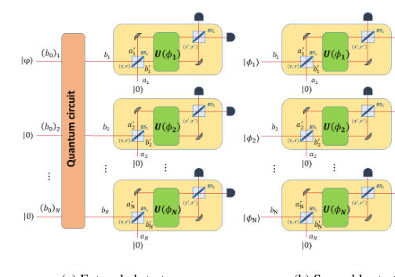
<figcaption class="paper-figure-caption"><b>Fig 1.</b> FIG. 1. Distributed quantum sensing setup using N Mach–Zehnder (MZI) interferometers. (a) Entangled strategy, where a state |φ⟩, dis- tributed by an N-mode quantum circuit, feeds the various MZIs in an entangled form. (b) A separable strategy in which each MZI in- dependently receives a state |φk⟩. In both cases, ϕ1, . . . , ϕN represent the relative phase shifts introduced in each interferometer.</figcaption>
</figure>
<figure class="paper-figure-card">
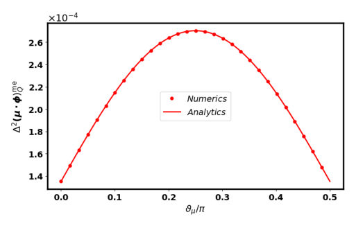
<figcaption class="paper-figure-caption"><b>Fig 2.</b> FIG. 2. The optimal sensitivity for the entangled strategy as a func- tion of µ for N = 2, nξ = 100, a = 0.5 and τ = 0.8. The red dots represent the numerical evaluation of equation (40) and the red line represents the analytical prediction defined by (43). The vector µ is given by µT = 1√</figcaption>
</figure>
<figure class="paper-figure-card">
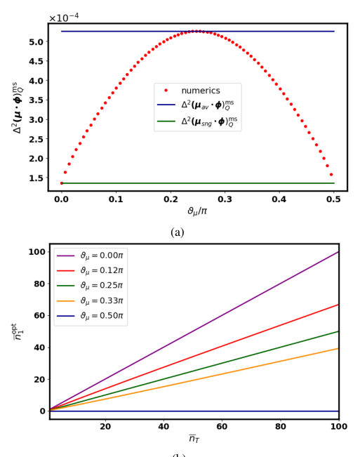
<figcaption class="paper-figure-caption"><b>Fig 3.</b> FIG. 4. (a) Optimal quantum sensitivity obtained by numerically optimizing the quantum Cram´er–Rao bound (QCRB) under the sep- arable strategy (48) (red points), as a function of µ. The reference curves correspond to (51) (blue line) and (50) (green line). (b) Op- timal average number of photons in the first mode as a function of the total average number of photons, for different values of µ. The parameters are those from Figure (2).</figcaption>
</figure>
<figure class="paper-figure-card">
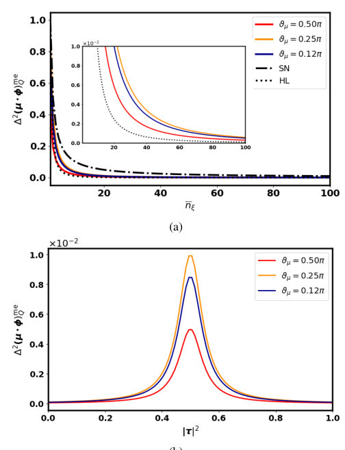
<figcaption class="paper-figure-caption"><b>Fig 4.</b> FIG. 3. Optimal quantum sensitivity of the entanglement strategy (43) (N = 2, a = 0.5) for different values of µ: (a) as a function of nξ (|τ|2 = 0.7); (b) as a function of |τ|2 (nξ = 100). The same vector µ as the Fig (2).</figcaption>
</figure>
<figure class="paper-figure-card">

<figcaption class="paper-figure-caption"><b>Fig 5.</b> FIG. 5. The numerical evaluation of the sensitivity gain given by Eq. (52) as a function of µ. The other parameters are identical to that of Fig. (2)</figcaption>
</figure>
</div>

<p><strong>Summary.</strong> This theoretical study proposes using an entangled quantum state, specifically an SU(1,1) Perelomov coherent state, within a network of Mach-Zehnder interferometers for distributed quantum sensing. By analyzing the Quantum Fisher Information Matrix, the authors prove that the entangled approach significantly surpasses the standard shot-noise limit and is systematically superior to any separable sensing scheme. This work provides crucial guidelines for designing high-precision quantum metrology devices.</p>
<p><strong>Why it may be interesting.</strong> This work is highly relevant to quantum optics and quantum metrology, providing concrete theoretical guidelines on how to engineer quantum correlations (entanglement) into linear optical circuits to surpass classical sensing limits.</p>
<details>
<summary>Detailed structure</summary>
<p><strong>Main problem.</strong> The paper addresses the challenge of achieving high-precision, simultaneous estimation of multiple relative phase shifts in a distributed quantum sensing network.</p>
<p><strong>Main result.</strong> The use of an entangled quantum state, generated via an SU(1,1) Perelomov coherent state, is shown to systematically outperform separable sensing strategies, achieving an accuracy gain up to $N$ times better.</p>
<p><strong>Method.</strong> The analysis employs multi-parameter quantum estimation theory, specifically calculating the Quantum Fisher Information Matrix (QFIM) and deriving the Quantum Cramér-Rao Bound (QCRB) for both entangled and separable input states.</p>
<p><strong>Model / system.</strong> The physical platform modeled is a reconfigurable network of $N$ Mach-Zehnder interferometers (MZIs). The quantum resource utilized is a Perelomov coherent state derived from the SU(1,1) group representation.</p>
<p><strong>Key observables.</strong> The primary observable is the estimation precision, quantified by the QCRB for the weighted linear combination of phase shifts ($\mu \cdot \phi$).</p>
<p><strong>Important parameters / regimes.</strong> The key parameters include the number of interferometers ($N$), the asymmetry of the first beam splitter (optimal at maximum imbalance), and the total average photon number.</p>
<p><strong>Assumptions / limitations.</strong> The analysis simplifies by setting the number of independent measurements ($M$) to 1, and it focuses on the theoretical QFI/QCRB without detailing the final measurement step.</p>
<p><strong>Figures summary.</strong> Figure 1 illustrates the comparison between the entangled (global/parallel) and separable (local/sequential) strategies for the MZI network setup.</p>
<p><strong>Paper structure.</strong> The paper first establishes the problem of distributed sensing, then develops the theoretical framework using the QFIM/QCRB. It systematically compares the performance of the entangled versus separable strategies, culminating in the demonstration of the entanglement advantage.</p>
</details>
<details>
<summary>Abstract</summary>
<p>We present a theoretical study of distributed quantum sensing using a reconfigurable network of $N$ Mach--Zehnder interferometers to simultaneously estimate weighted linear combinations of relative phase shifts. The proposed scheme relies on injecting a Perelomov coherent state, generated from the SU(1,1) group representation, into one port of a passive quantum circuit while the remaining modes are initialized in the vacuum state, thereby establishing non-trivial quantum correlations among the sensors. Based on multi-parameter quantum estimation theory, our analysis shows that this entangled strategy outperforms the standard shot-noise limit and asymptotically achieves the Heisenberg limit. Furthermore, we highlight the crucial role of the first beam splitter's asymmetry; specifically, the optimal transmission coefficient that maximizes sensitivity corresponds to its maximum imbalance. Compared to a separable approach utilizing the same total average photon number, the entangled strategy yields a more efficient use of quantum resources, guaranteeing an accuracy gain between $1$ and $N$. This demonstrates that the entangled strategy is systematically superior to its separable counterpart. Ultimately, these results illustrate the potential of entangled distributed quantum sensor networks for high-precision measurements and provide clear guidelines for optimizing interferometric architectures in quantum metrology.</p>
</details>
<p><sub><a href="#top">↑ back to top</a></sub></p>

<p><a id="paper-2610.17790"></a></p>
<h3 id="multi-parameter-estimation-enhanced-by-level-crossing-hamiltonian-structure-with-bayesian-feedback"><a href="http://arxiv.org/abs/2610.17790v1">Multi-parameter estimation enhanced by level crossing Hamiltonian structure with Bayesian feedback</a></h3>
<p><strong>Authors:</strong> Ryo Tatsumi, Le Bin Ho, Hiroaki Matsueda<br>
<strong>Type:</strong> theory · <strong>Category:</strong> quantum information and computing · <strong>PDF:</strong> <a href="https://arxiv.org/pdf/2610.17790v1">https://arxiv.org/pdf/2610.17790v1</a><br>
<strong>Analysis basis:</strong> full PDF text, analyzed in chunks
<strong>Topic relevance:</strong> <code>quantum measurements</code> <strong>3/5</strong> · <code>analog quantum simulation</code> <strong>2/5</strong></p>
<div class="figure-strip-hint">↔ Scroll figures horizontally</div>
<div class="paper-figures-scroll">
<figure class="paper-figure-card">
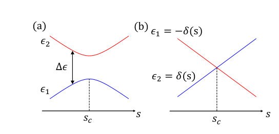
<figcaption class="paper-figure-caption"><b>Fig 1.</b> FIG. 1. The eigenvalue of the system’s Hamiltonian as a function of the parameter s where (a) q(a) ̸= 0, (b) q(a) = 0.</figcaption>
</figure>
<figure class="paper-figure-card">
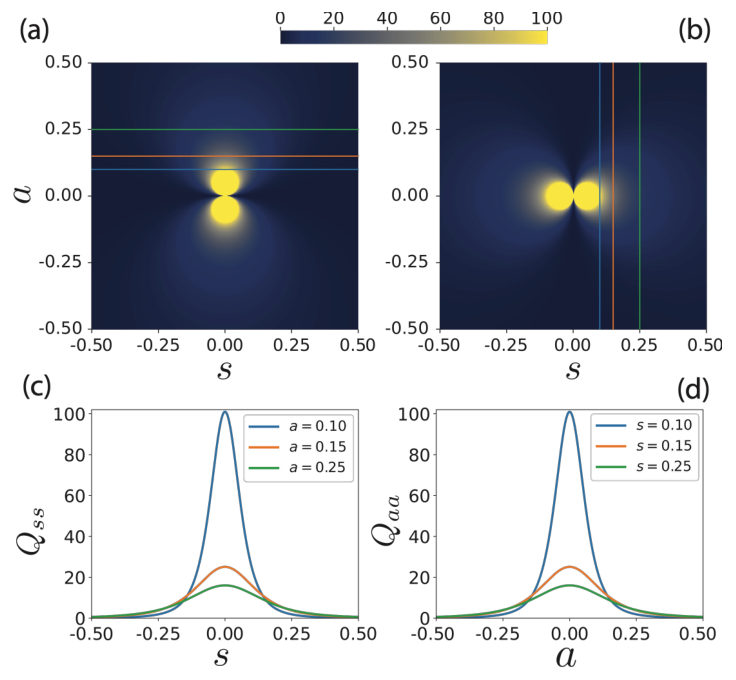
<figcaption class="paper-figure-caption"><b>Fig 2.</b> FIG. 2. QFI for the ground state of a two-level system. Heatmaps of (a) Qss and (b) Qaa computed from the ground state. (c) Qss as a function of s for several fixed values of a, and (d) Qaa as a function of a for several fixed values of s. In all panels, the QFI increases as the system approaches the crossing point (s, a) = (0, 0), where it becomes sharply enhanced.</figcaption>
</figure>
<figure class="paper-figure-card">
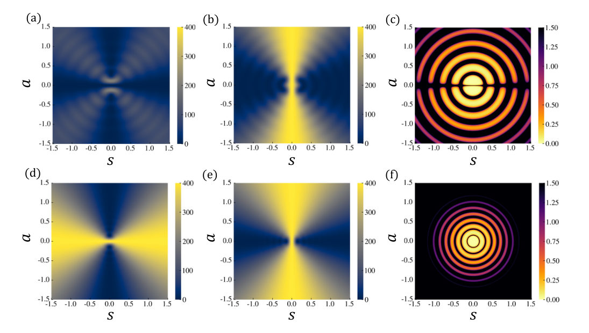
<figcaption class="paper-figure-caption"><b>Fig 3.</b> FIG. 3. QFI with a unitary process in two-level systems. The heatmaps of (a) Qss, (b) Qaa, and (c) Tr[Q−1] with initial state has θ = 0. The heatmaps of (d)Qss, (e)Qaa, and (f)Tr[Q−1] with initial state has θ = π/2.</figcaption>
</figure>
<figure class="paper-figure-card">

<figcaption class="paper-figure-caption"><b>Fig 4.</b> FIG. 4. (a)The probability density function pn(s, a) sharply peaked around the true value (sr, ar) = (0.2, −0.1) where n = 10000. (b)Blue and orange line exhibits the expected value of s and a as a function of the measurement number n. They approach to their true value represented the dotted line. (c)Measured uncertainty of the parameters. Solid lines shows var(s) + var(a) and the dot line shows the classical bound derived from the CFIM.</figcaption>
</figure>
<figure class="paper-figure-card">
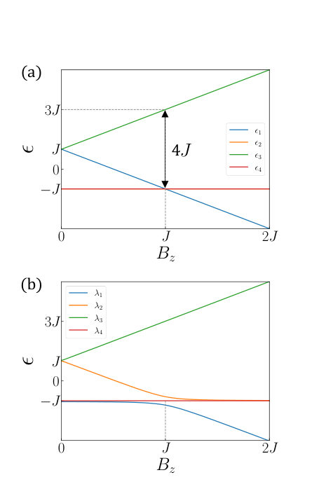
<figcaption class="paper-figure-caption"><b>Fig 5.</b> FIG. 5. The eigenvalues of Hamiltonian for (a)Bx = 0 and (b)Bx = 0.2. The energy levels of ϵ2 and ϵ4 are degenerate when Bx = 0.</figcaption>
</figure>
</div>

<p><strong>Summary.</strong> This paper develops a theoretical framework showing that quantum energy level crossings are optimal operating points for multi-parameter quantum metrology. By implementing a resource-efficient sensing protocol based on unitary dynamics and Bayesian estimation, the authors prove that the estimation precision can reach the fundamental Holevo bound. This suggests a simple, scalable method for achieving high-precision sensing across various quantum hardware platforms.</p>
<p><strong>Why it may be interesting.</strong> This work provides a concrete, physically intuitive mechanism (level crossings) to enhance quantum sensing beyond standard protocols, which is highly relevant for designing practical quantum sensors using platforms like superconducting qubits or trapped ions.</p>
<details>
<summary>Detailed structure</summary>
<p><strong>Main problem.</strong> The study establishes a framework connecting level crossing structures in quantum systems to the ultimate precision limits achievable in multi-parameter quantum metrology.</p>
<p><strong>Main result.</strong> The research demonstrates that level crossings serve as universal operating points for high-precision quantum sensing, allowing the estimation precision to saturate the Holevo Cramér–Rao bound.</p>
<p><strong>Method.</strong> The authors employ unitary quench dynamics combined with Bayesian estimation techniques to construct a resource-efficient sensing protocol.</p>
<p><strong>Model / system.</strong> The analysis uses simple models like the two-level system ($H = s\sigma_z + a\sigma_x$) and extends to the two-spin Ising model, focusing on the Hamiltonian structure near level crossings.</p>
<p><strong>Key observables.</strong> Quantum Fisher Information Matrix (QFIM) components ($Q_{ss}, Q_{aa}, Q_{sa}$), Classical Fisher Information Matrix (CFIM), and the variance sum $  ext{var}(s) +   ext{var}(a)$.</p>
<p><strong>Important parameters / regimes.</strong> The parameters being estimated are typically related to magnetic fields or coupling strengths ($s$ and $a$, or $B_z$ and $B_x$).</p>
<p><strong>Assumptions / limitations.</strong> The analysis often relies on approximations near the level-crossing point ($\delta 	o 0$) and utilizes optimal Positive Operator-Valued Measures (POVMs) to achieve the theoretical bounds.</p>
<p><strong>Figures summary.</strong> Figures illustrate eigenvalue behavior near crossings, heatmaps show QFI component enhancement near $(0, 0)$, and plots compare the achievable variance sum against the theoretical classical bound.</p>
<p><strong>Paper structure.</strong> The paper progresses from establishing the general connection between level crossings and metrology, deriving QFIMs for unitary evolution, proposing a Bayesian adaptive protocol, and validating the results using both simple two-level and complex Ising model examples.</p>
</details>
<details>
<summary>Abstract</summary>
<p>Level crossings, where two quantum energy levels intersect, are ubiquitous in quantum systems and play a central role in controlling quantum dynamics. In this study, we establish a framework that connects these level crossing structures to the ultimate precision limits of quantum metrology. By analyzing a Hamiltonian with the level crossings structure, we identify the conditions under which multiple parameters can be estimated simultaneously with maximal sensitivity near the level crossing point. We then construct a resource efficient sensing protocol based on unitary quench dynamics and Bayesian estimation, enabling high precision, low cost parameter estimation without requiring entanglement or complex control. We present a protocol whose estimation precision saturates the Holevo Cramer Rao bound, the tightest achievable precision bound in multi parameter estimation. Using the two level model and the two spin Ising model as illustrative examples, we demonstrate how the protocol can be applied to a system with level crossing Hamiltonian structure. Our findings reveal that level crossings serve as universal operating points for precision quantum metrology, offering a simple and scalable path toward practical multi parameter sensing across diverse quantum platforms.</p>
</details>
<p><sub><a href="#top">↑ back to top</a></sub></p>

<p><a id="paper-2610.18401"></a></p>
<h3 id="orbital-angular-momentum-transfer-and-beam-quality-limits-in-fork-grating-electron-diffraction"><a href="http://arxiv.org/abs/2610.18401v1">Orbital Angular Momentum Transfer and Beam-Quality Limits in Fork-Grating Electron Diffraction</a></h3>
<p><strong>Authors:</strong> P. K. Tsiopa, S. S. Baturin<br>
<strong>Type:</strong> theory · <strong>Category:</strong> other · <strong>PDF:</strong> <a href="https://arxiv.org/pdf/2610.18401v1">https://arxiv.org/pdf/2610.18401v1</a><br>
<strong>Analysis basis:</strong> full PDF text, analyzed in chunks
<strong>Topic relevance:</strong> <code>interference shaping light</code> <strong>3/5</strong> · <code>Keldysh / 2PI / non-Gaussian methods</code> <strong>1/5</strong> · <code>methods for driven-dissipative</code> <strong>1/5</strong></p>
<div class="figure-strip-hint">↔ Scroll figures horizontally</div>
<div class="paper-figures-scroll">
<figure class="paper-figure-card">
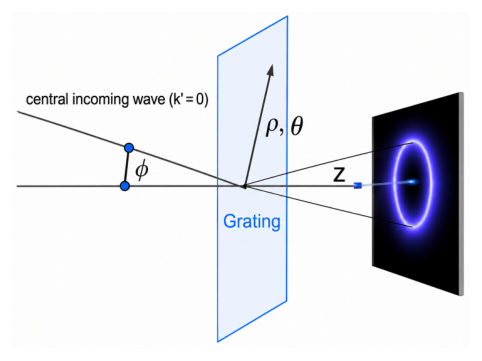
<figcaption class="paper-figure-caption"><b>Fig 1.</b> FIG. 1. Geometry of fork-grating preparation with compensa- tion of the selected order’s deterministic transverse momentum. The fixed incident angle ϕ is chosen so that Km = 0 in Eq. (24); the mean component of that order then propagates along the grating normal z. The coordinates (ρ, θ) are measured about this common axis. The notation k′ = 0 in the schematic denotes zero residual transverse wave vector, k⊥= 0.</figcaption>
</figure>
<figure class="paper-figure-card">
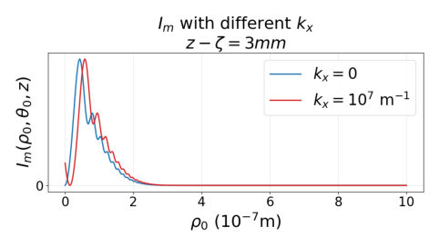
<figcaption class="paper-figure-caption"><b>Fig 2.</b> FIG. 2. Displacement of single-component diffraction profiles for m = 1 due to residual transverse tilt. The blue and red curves correspond to kx = 0 and kx = 107 m−1, respectively, with ky = 0, at z −ζ = 3 mm in the low-density regime described in the text. The profiles of Eq. (33) are shown along the positive x axis of the compensated selected order; the plotting labels (ρ0, θ0) denote the common coordinates (ρ, θ). The tilted component is displaced by αm = (z −ζ)kx/k [Eq. (26)], and its vortex zero remains at its own displaced center.</figcaption>
</figure>
<figure class="paper-figure-card">
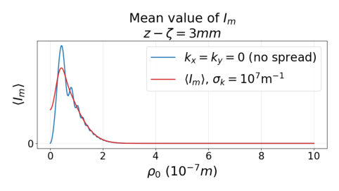
<figcaption class="paper-figure-caption"><b>Fig 3.</b> FIG. 3. Effect of incoherent transverse-momentum averaging on the observed diffraction profile for m = 1 at z −ζ = 3 mm, with negligible Hartree correction. The blue curve is the centered component kx = ky = 0; the red curve is the ensemble profile of Eq. (34) for the Gaussian distribution in Eq. (19), with σk = 107 m−1. Both curves are line profiles along the positive x axis, with ρ0 = ρ and θ0 = θ = 0. Averaging over the displaced component centers fills the intensity minimum at the mean beam center and smooths the radial oscillations.</figcaption>
</figure>
<figure class="paper-figure-card">
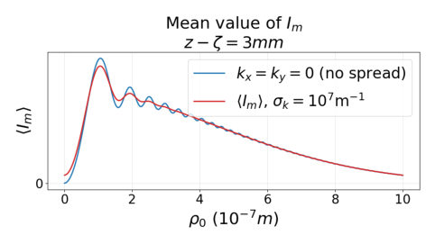
<figcaption class="paper-figure-caption"><b>Fig 4.</b> FIG. 4. Diffraction profiles including the common radial electromagnetic Hartree phase for m = 1 of Eq. (17), at z−ζ = 3 mm. The blue curve represents the centered component kx = ky = 0; the red curve represents the incoherent Gaussian ensemble with σk = 107 m−1. The curves are plotted along the positive x axis, using ρ0 = ρ and θ0 = θ = 0. The broader radial structure compared with Fig. 3 illustrates the defocusing action of the Hartree phase. The scale ρc in Eq. (35) characterizes the exponential branch of the solution. This common radial phase preserves the full-plane OAM moments and transverse-state purity. The concentration for this figure is taken as n = 1018m−3 and ˜χem ≈1.5 × 1014.</figcaption>
</figure>
</div>

<p><strong>Summary.</strong> This work theoretically investigates how electron beams generate and propagate vortex beams using a fork-grating, accounting for non-ideal beam properties and space-charge effects. It establishes that while the mean OAM is topologically protected, the beam's transverse purity is limited by the variance of the OAM. The analysis uses advanced wave propagation techniques under several key approximations.</p>
<p><strong>Why it may be interesting.</strong> It provides a rigorous theoretical framework for understanding how fundamental quantum numbers like OAM are preserved or degraded in complex wave propagation scenarios involving strong electromagnetic interactions, relevant to quantum beam shaping.</p>
<details>
<summary>Detailed structure</summary>
<p><strong>Main problem.</strong> The paper analyzes the transfer of Orbital Angular Momentum (OAM) and the resulting beam-quality limits when generating electron vortex beams using a fork-grating structure.</p>
<p><strong>Main result.</strong> The mean OAM ($\langle L_z 
angle_m$) is robustly fixed by the topological rule ($\langle L_z 
angle_m = m\hbar$), while the transverse purity ($P_{\perp,m}$) is determined by the variance of the OAM ($\Delta L_{z,m}$).</p>
<p><strong>Method.</strong> The analysis uses Fresnel propagation and the quasistatic electromagnetic Hartree approximation to derive analytical expressions for diffraction orders and OAM statistics.</p>
<p><strong>Model / system.</strong> The system involves an electron beam modeled as a paraxial Gaussian ensemble passing through a fork-grating, preceded by an interaction with a space-charge potential (Hartree self-field).</p>
<p><strong>Key observables.</strong> Mean OAM ($\langle L_z 
angle_m$), Transverse Purity ($P_{\perp,m}$), OAM Dispersion ($\Delta L_{z,m}$), and the final diffracted beam profile.</p>
<p><strong>Important parameters / regimes.</strong> The topological order $m$, the residual transverse momentum spread ($\Delta L_{z,m}$), and the strength of the accumulated Hartree phase ($  ilde{\chi}_{    ext{em}}$).</p>
<p><strong>Assumptions / limitations.</strong> The derivation relies on several smallness conditions, including the paraxial approximation and the first-Hartree eikonal phase screen, which neglects higher-order self-field effects.</p>
<p><strong>Paper structure.</strong> The paper builds from modeling the incident beam and the effect of the Hartree potential, through deriving the diffraction orders using Fresnel propagation, and finally calculating the OAM statistics and beam purity.</p>
</details>
<details>
<summary>Abstract</summary>
<p>We analyze fork-grating generation of electron vortex beams beyond the ideal single-mode approximation. The incident beam is described as a paraxial Gaussian ensemble with finite transverse momentum spread and a first electromagnetic Hartree phase accumulated before the grating. Within Fresnel propagation we derive an analytical expression for each diffraction order and determine the corresponding orbital-angular-momentum statistics. The mean OAM of a selected order remains fixed by the topological rule, $\langle L_z\rangle_m=mp\hbar$, while its variance is set by the residual transverse momentum spread of the beam prepared at the grating. For the Gaussian mixture, the transverse purity is $\mathcal P_{\perp,m}=[1+2(ΔL_{z,m}/\hbar)^2]^{-1}$. The observed annular profile is governed by a separate propagation-dependent blurring scale, so a beam can retain well-defined mean OAM while having low transverse purity or a partially filled vortex minimum. Within the radial phase-screen approximation, the Hartree self-field modifies the propagated profile while preserving the full-plane OAM moments and transverse purity.</p>
</details>
<p><sub><a href="#top">↑ back to top</a></sub></p>

<p><a id="paper-2610.18527"></a></p>
<h3 id="phases-of-a-rotating-bose-einstein-condensate-trapped-in-a-hard-wall-potential"><a href="http://arxiv.org/abs/2610.18527v1">Phases of a rotating Bose-Einstein condensate trapped in a hard-wall potential</a></h3>
<p><strong>Authors:</strong> Hélène Perrin, G. M. Kavoulakis<br>
<strong>Type:</strong> theory · <strong>Category:</strong> quantum gases · <strong>PDF:</strong> <a href="https://arxiv.org/pdf/2610.18527v1">https://arxiv.org/pdf/2610.18527v1</a><br>
<strong>Analysis basis:</strong> full PDF text, analyzed in chunks
<strong>Topic relevance:</strong> <code>analog quantum simulation</code> <strong>3/5</strong> · <code>Keldysh / 2PI / non-Gaussian methods</code> <strong>1/5</strong></p>
<div class="figure-strip-hint">↔ Scroll figures horizontally</div>
<div class="paper-figures-scroll">
<figure class="paper-figure-card">

<figcaption class="paper-figure-caption"><b>Fig 1.</b> FIG. 1: Phase diagram, where on the x axis is the rotational frequency of the trap Ω(in units of Ω0 = ℏ/(MR2 0)) and on the y axis is the (dimensionless) coupling g. Here we have a hard-wall trapping potential with R/R0 = 3. The solid lines, which are given by Eq. (13), give the discontinuous transi- tions, while the dotted curves give the continuous ones. The dotted curves separate the phase diagram into two parts. In the lower part the order parameter corresponds to vortices of multiple quantization. In the upper part, the order parame- ter corresponds to a mixed state, see Eq. (14). In the region of multiple quantization, each time one crosses a solid line, the circulation increases by...</figcaption>
</figure>
<figure class="paper-figure-card">
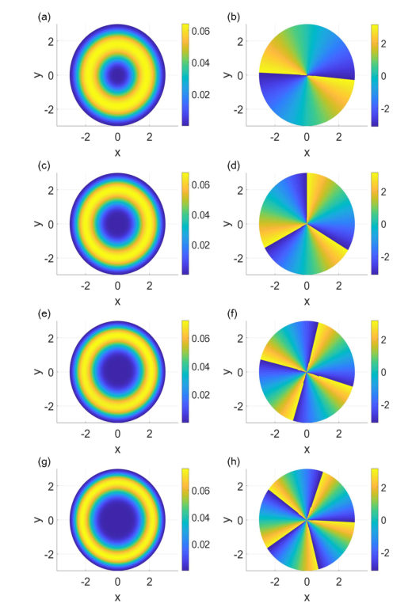
<figcaption class="paper-figure-caption"><b>Fig 2.</b> FIG. 2: (Colour online). (a), (c), (e), (g) Density and (b), (d), (f), (h) phase of the order parameter, in a hard-wall potential, with R/R0 = 3, for the case of multiply-quantized vortex states, where the order parameter is ∝eim0θ, with g = 2. In (a) and (b) Ω/Ω0 = 0.75, where m0 = 2; in (c) and (d) Ω/Ω0 = 0.90, where m0 = 3; in (e) and (f) Ω/Ω0 = 1.05, where m0 = 4; in (g) and (h) Ω/Ω0 = 1.20, where m0 = 5. Here the axes are measured in units of R0, and the density in units of R−2 0 .</figcaption>
</figure>
<figure class="paper-figure-card">

<figcaption class="paper-figure-caption"><b>Fig 3.</b> FIG. 3: The transverse profile of the density that corresponds to Fig. 2 (a), i.e., for g = 2, m0 = 2, and Ω/Ω0 = 0.75. Here R/R0 = 3, the x axis is measured in units of R0, and the y axis in units of R−2 0 .</figcaption>
</figure>
<figure class="paper-figure-card">
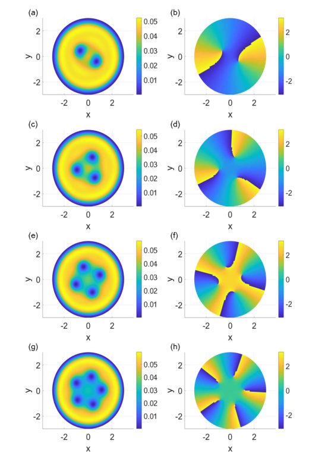
<figcaption class="paper-figure-caption"><b>Fig 4.</b> FIG. 4: (Colour online). (a), (c), (e), (g) Density and (b), (d), (f), (h) phase of the order parameter, in a hard-wall potential, with R/R0 = 3, and g = 10. In (a) and (b) Ω/Ω0 = 0.75; in (c) and (d) Ω/Ω0 = 1.00; in (e) and (f) Ω/Ω0 = 1.15; in (g) and (h) Ω/Ω0 = 1.30. Here the axes are measured in units of R0, and the density in units of R−2 0 .</figcaption>
</figure>
<figure class="paper-figure-card">

<figcaption class="paper-figure-caption"><b>Fig 5.</b> FIG. 5: More general phase diagram (log-log plot), where on the x axis is the rotational frequency of the trap Ω(in units of Ω0) and on the y axis is the (dimensionless) coupling g. Here we have a hard-wall trapping potential, with R/R0 = 3. The circles “•” denote the multiply-quantized vortex states, which are very close to the Bessel eigenstates of the non-interacting problem. The asterisks “∗” denote the mixed states, which are linear superpositions of Bessel eigenstates. The squares “■” denote the phase of a vortex lattice. The stars “⋆” denote the phase of a vortex lattice with a hole. Finally, the diamonds “♦” denote the giant-vortex phase, which resembles the multiply-quantized...</figcaption>
</figure>
</div>

<p><strong>Summary.</strong> This paper maps out the complex phase diagram of a rotating Bose-Einstein condensate confined in a hard-wall potential. By varying the rotational frequency and interaction strength, the authors identify transitions between multiple quantized vortex states, vortex lattices, and giant vortices. The results provide a detailed theoretical understanding of how quantum fluid topology responds to external rotation and interatomic interactions.</p>
<p><strong>Why it may be interesting.</strong> This work provides a comprehensive phase diagram for a fundamental quantum system (BEC) under rotation, demonstrating how topological defects (vortices) and interaction strength dictate the macroscopic quantum state, which is highly relevant for understanding superfluid dynamics.</p>
<details>
<summary>Detailed structure</summary>
<p><strong>Main problem.</strong> The study investigates the rotational properties and resulting quantum phases of a zero-temperature Bose-Einstein condensate confined within a hard-wall potential.</p>
<p><strong>Main result.</strong> The system exhibits multiple distinct phases—including vortex lattices, central holes, and giant vortices—whose stability depends critically on the interplay between the rotational frequency ($\Omega$) and the interaction coupling constant ($g$).</p>
<p><strong>Method.</strong> The analysis employs mean-field theory, utilizing energy functionals and solving the problem in the quasi-two-dimensional limit by expanding the order parameter in Bessel eigenfunctions.</p>
<p><strong>Model / system.</strong> The system is a Bose-Einstein condensate gas confined by a hard-wall potential and subjected to rotation. The dynamics are governed by an energy functional incorporating kinetic, interaction, and rotational energy terms.</p>
<p><strong>Key observables.</strong> The primary observables are the stable phases (e.g., multiple quantization, vortex lattice, giant vortex) and the corresponding phase diagram mapping $\Omega$ versus $g$.</p>
<p><strong>Important parameters / regimes.</strong> Key parameters include the angular velocity ($\Omega$), the coupling constant ($g$), and the hard-wall radius ($R$). The analysis covers regimes from weak to strong interactions.</p>
<p><strong>Assumptions / limitations.</strong> The analysis assumes zero temperature and utilizes the mean-field approximation, which is justified even in the Thomas-Fermi limit.</p>
<p><strong>Figures summary.</strong> The figures illustrate the phase diagram ($\Omega$ vs. $g$) showing transitions between various vortex states, and also show the density and phase profiles of the order parameter for specific parameter choices.</p>
<p><strong>Paper structure.</strong> The paper systematically analyzes the problem by first defining the Hamiltonian and reducing it to quasi-2D. It then examines the phase transitions across different coupling regimes (repulsive vs. attractive $g$) and rotational frequencies ($\Omega$), mapping out the full phase diagram.</p>
</details>
<details>
<summary>Abstract</summary>
<p>We investigate the rotational properties of a zero-temperature Bose-Einstein condensed gas, which is confined in a hard-wall potential. For weak interactions the gas carries its angular momentum via vortices of multiple quantization. As the coupling increases and for sufficiently slow rotational frequencies of the trap, the multiply-quantized vortex states become unstable against a mixed state. For stronger couplings, as the angular frequency of the trap increases, there is a transition from a vortex lattice, to a vortex lattice with a hole at the trap center, and finally to a giant vortex. For weak effective attractive interactions we still have vortices of multiple quantization. These states become unstable towards states which break the axial symmetry of the problem and resemble center-of-mass excitation, as the coupling becomes more negative. Finally, for even more attractive forces, the system becomes unstable against collapse.</p>
</details>
<p><sub><a href="#top">↑ back to top</a></sub></p>

<p><a id="paper-2610.18742"></a></p>
<h3 id="emergent-loop-geometry-in-gauge-equivariant-graph-neural-networks"><a href="http://arxiv.org/abs/2610.18742v1">Emergent Loop Geometry in Gauge-Equivariant Graph Neural Networks</a></h3>
<p><strong>Authors:</strong> Ali Rayat, Gia-Wei Chern<br>
<strong>Type:</strong> theory · <strong>Category:</strong> statistical mechanics · <strong>PDF:</strong> <a href="https://arxiv.org/pdf/2610.18742v1">https://arxiv.org/pdf/2610.18742v1</a><br>
<strong>Analysis basis:</strong> full PDF text, analyzed in chunks
<strong>Topic relevance:</strong> <code>analog quantum simulation</code> <strong>3/5</strong></p>
<div class="figure-strip-hint">↔ Scroll figures horizontally</div>
<div class="paper-figures-scroll">
<figure class="paper-figure-card">

<figcaption class="paper-figure-caption"><b>Fig 1.</b> FIG. 1. Schematic of the graph neural network (GNN) and message-passing architecture. The input lattice is represented as a graph with information carried by both nodes and edges. Starting from the input edge variables Uij and local node features Vinput i , successive message-passing layers generate hidden node features Vi and edge features Eij. At each layer, an edge feature Eij is updated using information from the edge itself and the two nodes at its endpoints (top), while a node feature Vi is updated by combining its own features with information aggregated from its four nearest-neighbor nodes (bottom). Repeated message passing therefore propagates information over increasingly extended...</figcaption>
</figure>
<figure class="paper-figure-card">

<figcaption class="paper-figure-caption"><b>Fig 2.</b> FIG. 2. Examples of closed lattice paths generated by gauge- equivariant message passing and represented by node features Vi. The green circle marks the reference node i at which each loop is anchored, while the red arrows indicate the ordered sequence of lattice links forming the path. Starting from ele- mentary plaquette loops, successive node and edge message- passing operations generate increasingly extended and geo- metrically complex closed paths, including paths that retrace links or revisit lattice sites. Panels (a)–(i) show representative short loops generated at different stages of this recursive con- struction. The corresponding message-gathering operations for these examples are...</figcaption>
</figure>
<figure class="paper-figure-card">

<figcaption class="paper-figure-caption"><b>Fig 3.</b> FIG. 3. Representative closed paths generated by the recursive loop-sampling algorithm. Rows (a)–(c) show realizations at recursion depths n = 4, 5, and 6, respectively; ℓdenotes the full contour length of each path. The green star marks the reference site where the path begins and ends. Color indicates the traversal step k, progressing from the beginning to the end of each path. Unlike the short examples in Fig. 2, these realizations are generated by stochastic selection of node and edge message operations, without prescribing their shapes. Paths generated at the same depth vary substantially in length and geometry and can traverse links repeatedly, revisit sites, and contain nested or...</figcaption>
</figure>
<figure class="paper-figure-card">

<figcaption class="paper-figure-caption"><b>Fig 4.</b> FIG. 4. Loop-length statistics of recursively generated closed paths. (a) Semilog plot of the loop-length distribution Pn(ℓ) in d = 2 for recursion depths n = 2, . . . , 6. The tails bend downward, indicating that their decay steepens with ℓand is faster than a single exponential over the displayed range. (b) Mean loop length ⟨ℓ⟩and (c) maximum observed loop length ℓmax as functions of recursion depth for d = 2, 3, 4. Both increase rapidly with depth; the maximum is the largest length in the sampled loops, rather than the maximum allowed by the recursion.</figcaption>
</figure>
<figure class="paper-figure-card">
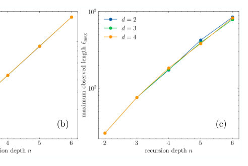
<figcaption class="paper-figure-caption"><b>Fig 5.</b> Figure 4(a) shows that the length distribution Pn(ℓ) broadens and shifts toward larger ℓwith increasing depth. The growth of its mean follows exactly from the additive lengths of the message products. Let ¯ℓV (n) and ¯ℓE(n) denote the mean node and edge lengths after n updates. The three node choices contribute lengths ℓV , 2ℓV , and ℓV + 2ℓE, while the four edge products contribute ℓE, ℓE + ℓV , ℓE + ℓV , and ℓE + 2ℓV . Averaging these choices gives</figcaption>
</figure>
</div>

<p><strong>Summary.</strong> This work analyzes the geometry of paths generated by gauge-equivariant Graph Neural Networks operating on lattice gauge theory configurations. It finds that while the total path length can grow exponentially, the actual spatial area explored grows much more slowly. This reveals a fundamental distinction between path traversal order and physical spatial extent in these complex quantum models.</p>
<p><strong>Why it may be interesting.</strong> The concept of path complexity and geometric constraints emerging from local interactions (like message passing) has parallels in understanding entanglement structure or correlation functions in many-body quantum systems.</p>
<details>
<summary>Detailed structure</summary>
<p><strong>Main problem.</strong> The study investigates the geometry of internal structures generated by gauge-equivariant graph neural networks (GNNs) when processing gauge links, noting that the receptive field alone is insufficient to capture the full geometric complexity.</p>
<p><strong>Main result.</strong> A clear separation exists between the rapid, exponential growth of the path's contour length and the much slower growth of its actual spatial extent, indicating repeated traversal of compact regions.</p>
<p><strong>Method.</strong> The analysis involves studying the statistical ensemble of closed lattice walks generated by recursive node- and edge-feature operations, independently of the network's training process.</p>
<p><strong>Model / system.</strong> The model is based on lattice gauge theories (like QCD) simulated on a lattice, where information is encoded in gauge links ($U_{ij}$) and processed via gauge-equivariant message passing within a GNN framework.</p>
<p><strong>Key observables.</strong> Contour length ($\ell$), Radius of Gyration ($    ext{Rg}$), Number of Distinct Visited Sites ($N_{   ext{distinct sites}}$), and Effective Dimension ($D_{  ext{eff}}$).</p>
<p><strong>Important parameters / regimes.</strong> Network depth (recursion depth $n$), spatial dimension ($d=2, 3, 4$), and the underlying gauge group structure.</p>
<p><strong>Assumptions / limitations.</strong> The analysis assumes that the path generation process can be decoupled from the final non-linear processing steps, allowing for the study of the underlying path connectivity.</p>
<p><strong>Figures summary.</strong> Figure 8 plots geometric observables ($    ext{Rg}$, $N_{	ext{distinct sites}}$, $D_{	ext{eff}}$) against loop length ($\ell$) for various dimensions and recursion depths, showing that spatial metrics grow much slower than the path length.</p>
<p><strong>Paper structure.</strong> The paper first establishes the GNN framework for gauge links, then analyzes the recursive path generation process, and finally compares the resulting path length statistics (contour length vs. spatial metrics) to reveal the geometric hierarchy.</p>
</details>
<details>
<summary>Abstract</summary>
<p>Gauge-equivariant graph neural networks generate ordered products of gauge links through local message passing, but the geometry of these internal structures is not captured by the receptive field alone. We investigate the statistical ensemble of closed lattice walks generated by recursive node- and edge-feature operations, independently of network training. Analytical and numerical results reveal a separation between rapid growth of contour length and much slower spatial expansion: deeper compositions generate increasingly long paths through repeated traversal of relatively compact regions. Loop expansions of fermionic observables provide a physical interpretation of this hierarchy, showing how spatial locality remains compatible with high-order dependence on nearby gauge fields. These findings identify complementary roles of network depth in extending spatial reach and enriching the representations constructed within that reach, providing a geometrical perspective on learning lattice gauge observables.</p>
</details>
<p><sub><a href="#top">↑ back to top</a></sub></p>

<p><a id="paper-2610.18031"></a></p>
<h3 id="optimal-lower-bound-on-the-sample-complexity-of-coherent-classical-shadows-for-mixed-states"><a href="http://arxiv.org/abs/2610.18031v1">Optimal Lower Bound on the Sample Complexity of Coherent Classical Shadows for Mixed States</a></h3>
<p><strong>Authors:</strong> Pavel Svetlichnyy<br>
<strong>Type:</strong> theory · <strong>Category:</strong> quantum information and computing · <strong>PDF:</strong> <a href="https://arxiv.org/pdf/2610.18031v1">https://arxiv.org/pdf/2610.18031v1</a><br>
<strong>Analysis basis:</strong> full PDF text, analyzed in chunks
<strong>Topic relevance:</strong> <code>quantum measurements</code> <strong>3/5</strong></p>
<div class="figure-strip-hint">↔ Scroll figures horizontally</div>
<div class="paper-figures-scroll">
<figure class="paper-figure-card">

<figcaption class="paper-figure-caption"><b>Fig 1.</b> Low-resolution page preview, page 2</figcaption>
</figure>
<figure class="paper-figure-card">

<figcaption class="paper-figure-caption"><b>Fig 2.</b> Low-resolution page preview, page 3</figcaption>
</figure>
<figure class="paper-figure-card">

<figcaption class="paper-figure-caption"><b>Fig 3.</b> Low-resolution page preview, page 4</figcaption>
</figure>
<figure class="paper-figure-card">
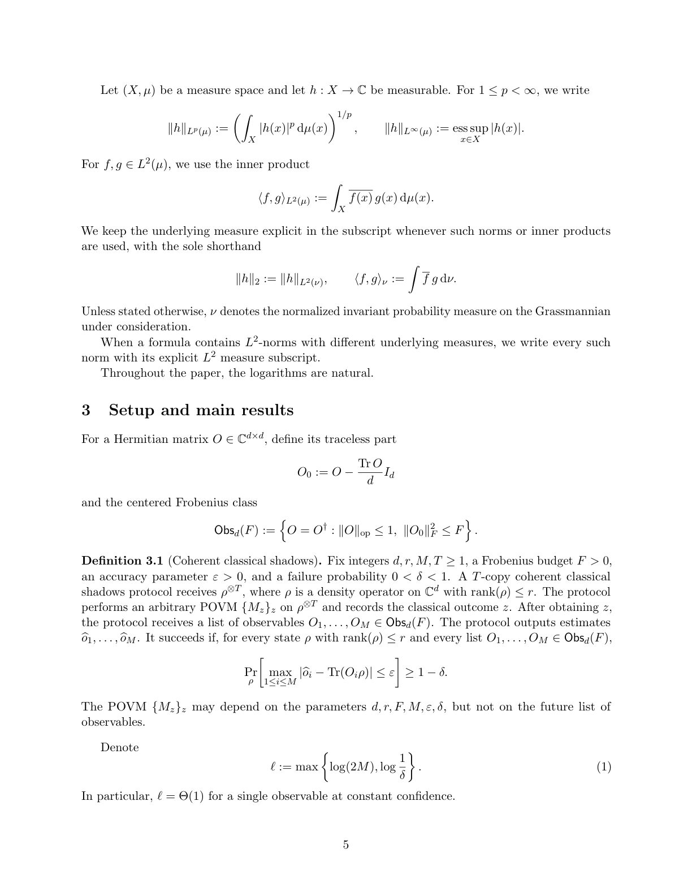
<figcaption class="paper-figure-caption"><b>Fig 4.</b> Low-resolution page preview, page 5</figcaption>
</figure>
<figure class="paper-figure-card">

<figcaption class="paper-figure-caption"><b>Fig 5.</b> Low-resolution page preview, page 6</figcaption>
</figure>
</div>

<p><strong>Summary.</strong> This paper derives a rigorous lower bound on the sample complexity required for coherent classical shadows protocols to estimate quantum state properties. The bound quantifies the minimum number of quantum copies needed, showing it depends on the state rank, observable constraints, and desired accuracy. The methodology is advanced, drawing parallels to complexity theory problems like Boolean Hidden Matching.</p>
<p><strong>Why it may be interesting.</strong> This work provides fundamental, information-theoretic limits on how efficiently quantum states can be characterized using shadow measurements, which is crucial for designing practical quantum characterization protocols.</p>
<details>
<summary>Detailed structure</summary>
<p><strong>Main problem.</strong> The paper aims to determine the optimal lower bound on the sample complexity ($T$) required for coherent classical shadows protocols to estimate expectation values of observables for an unknown quantum state.</p>
<p><strong>Main result.</strong> A lower bound for the required number of copies $T$ is established as $T = \Omega \left( \min \left( rac{\sqrt{rF\ell}}{\epsilon}, rac{(F\ell)^{2/3}}{\epsilon^{4/3}} 
ight) + rac{\ell}{\epsilon^2} 
ight)$.</p>
<p><strong>Method.</strong> The proof uses techniques inspired by the Boolean Hidden Matching problem, involving a Gaussian-lift noise kernel and bounding the distinguishing advantage in an auxiliary game.</p>
<p><strong>Model / system.</strong> The study concerns an unknown quantum state $
ho$ on a $d$-dimensional system with a maximum rank $r$. The estimation protocol involves applying a POVM $\{M_z\}_z$ to $T$ copies of the state, followed by measurements of $M$ observables.</p>
<p><strong>Key observables.</strong> The observables $O_i$ are constrained by $\lVert O 
Vert_{	ext{op}} \le 1$ and $\lVert O_0 
Vert_F^2 \le F$, where $O_0$ is the traceless part of the observable.</p>
<p><strong>Important parameters / regimes.</strong> Key parameters include the dimension $d$, state rank $r$, Frobenius bound $F$, number of observables $M$, accuracy $\epsilon$, failure probability $\delta$, and $\ell = \max\{\log(2M), \log(1/\delta)\}$.</p>
<p><strong>Assumptions / limitations.</strong> The result holds under the mild assumption $\log(2M) \lesssim d \min\{r, F\}$.</p>
<p><strong>Paper structure.</strong> The paper details the problem setup, presents the main theorem establishing the lower bound, and develops the proof strategy by relating it to the Boolean Hidden Matching problem and analyzing information extraction bounds.</p>
</details>
<details>
<summary>Abstract</summary>
<p>We study coherent classical shadows protocols for an unknown $d$-dimensional quantum state of rank at most $r$, allowing an arbitrary joint measurement on all available copies. For observables with operator norm at most one and centered squared Frobenius norm at most $F$, we study the minumum number of copies $T$ needed for the protocol to successed with propbability $1 - δ$. We prove a lower bound on $T$, that depends both on $δ$ and the number $M$ of post-measurement observables. Denoting $\ell=\max\{\log(2M),\log(1/δ)\}$, we show that $T=Ω\left(\min\left\{\frac{\sqrt{rF\ell}}{\varepsilon},\frac{(F\ell)^{2/3}}{\varepsilon^{4/3}}\right\}+\frac{\ell}{\varepsilon^2}\right)$ under the mild assumption $\log(2M)\lesssim d\min\{r,F\}$. The lower bound nearly matches the known upper bound and matches the conjectural strengthening of the known upper bound.   The proof is inspired by the framework of the proof of the lower bound for Boolean Hidden Matching. We develop a Gaussian-lift noise kernel that transfers forward and reverse Gaussian hypercontractivity to the Grassmannian, allowing us to bound the distinguishing advantage in an auxiliary game with a revealed query observable. We use Schur--Weyl structure and posterior moment bounds to control arbitrary coherent measurements on the source side.</p>
</details>
<p><sub><a href="#top">↑ back to top</a></sub></p>

<p><a id="paper-2610.17299"></a></p>
<h3 id="quantum-skyrmion-molecule-two-quantum-skyrmions-bound-by-coherent-magnon-exchange"><a href="http://arxiv.org/abs/2610.17299v1">Quantum skyrmion molecule: two quantum skyrmions bound by coherent magnon exchange</a></h3>
<p><strong>Authors:</strong> Ricardo L. Silva<br>
<strong>Type:</strong> theory · <strong>Category:</strong> strongly correlated electrons · <strong>PDF:</strong> <a href="https://arxiv.org/pdf/2610.17299v1">https://arxiv.org/pdf/2610.17299v1</a><br>
<strong>Analysis basis:</strong> full PDF text, analyzed in chunks
<strong>Topic relevance:</strong> <code>analog quantum simulation</code> <strong>3/5</strong></p>
<div class="figure-strip-hint">↔ Scroll figures horizontally</div>
<div class="paper-figures-scroll">
<figure class="paper-figure-card">

<figcaption class="paper-figure-caption"><b>Fig 1.</b> FIG. 1. Flake geometries. (a) Discs of 31, 55, and 85 sites used for a single skyrmion. (b) Stadium of half-width r0 = 4.6 and length d = 16 (261 sites) used for the free pair. Gray dots mark the first shell of the frozen ferromagnetic background. The dashed lines delimit the central column C (x = 0); the regions A′ (x &lt; 0) and B′ (x &gt; 0) are used for the number dis- tribution P(nA) and the mutual information (Appendix B).</figcaption>
</figure>
<figure class="paper-figure-card">

<figcaption class="paper-figure-caption"><b>Fig 2.</b> FIG. 2. Binding energy per flipped spin, e(Nf), of a single quantum skyrmion (DMRG, χ = 1000–1200) on the 55-site disc for K = 0.02, 0.03, and 0.04 (filled symbols), and on the 85-site disc for K = 0.03 (open symbols). The minimum at N ∗ f = 7 (dotted line) defines the natural size; its position is independent of K and of the flake, while its depth is not.</figcaption>
</figure>
<figure class="paper-figure-card">
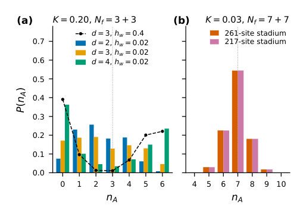
<figcaption class="paper-figure-caption"><b>Fig 3.</b> FIG. 3. Distribution P(nA) of the number of flipped spins in the left half of a stadium. (a) K = 0.20, Nf = 3+3 skyrmions placed at d = 2, 3, and 4 with weak wells (hw = 0.02): P(nA) is broad and has no peak at nA = 3; strong wells (hw = 0.4, dashed line) make it bimodal. The two skyrmions have coalesced. (b) K = 0.03, Nf = 7+7, free pair (hw = 0) on the 217- and 261-site stadiums: a sharp peak at nA = 7 identifies two skyrmions.</figcaption>
</figure>
<figure class="paper-figure-card">

<figcaption class="paper-figure-caption"><b>Fig 4.</b> FIG. 4. Pinned pair at K = 0.03 (hw = 0.01, r0 = 3.7 stadiums). (a) Interaction energy U(d) = E(14) −2E(7) as a function of the well separation d; open squares, χ = 2000. Inset: U at d = 8 as a function of the pinning strength hw. (b) Weight P(nA = 7) of the 7+7 configuration, showing that the pair remains two objects at all d.</figcaption>
</figure>
<figure class="paper-figure-card">
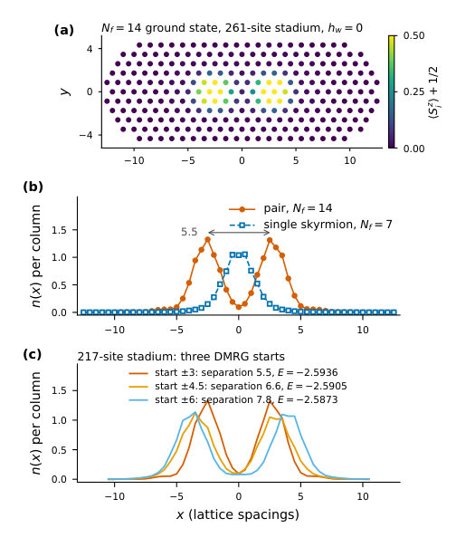
<figcaption class="paper-figure-caption"><b>Fig 5.</b> FIG. 5. Free pair (hw = 0, K = 0.03). (a) Local density of flipped spins, ⟨Sz i ⟩+ 1/2, in the Nf = 14 ground state of the 261-site stadium. (b) Column profile n(x) of the same state and of the single-skyrmion reference (Nf = 7) in the same stadium; the two lobes of the pair are 5.5 lattice spacings apart. (c) Three DMRG starts on the 217-site stadium end at different separations with monotonically increasing energy (in units of J1, relative to Efm); the lowest, at separation 5.5, is the ground state.</figcaption>
</figure>
</div>

<p><strong>Summary.</strong> This work theoretically examines the formation of a 'quantum skyrmion molecule' in frustrated magnets. Using DMRG, the authors show that two skyrmions bind into a stable dimer due to coherent magnon exchange, a quantum effect. This molecule is proposed as a novel candidate for realizing two-qubit elements in quantum computation.</p>
<p><strong>Why it may be interesting.</strong> The concept of a quantum molecule formed by topological excitations (skyrmions) and its characterization via quantum information measures (mutual information) makes it highly relevant to understanding emergent quantum states in magnetic materials.</p>
<details>
<summary>Detailed structure</summary>
<p><strong>Main problem.</strong> The study investigates the binding energy and quantum coupling mechanism between two quantum skyrmions in a frustrated spin-1/2 magnet.</p>
<p><strong>Main result.</strong> Two skyrmions of natural size form a stable, weakly bound molecule mediated by coherent magnon exchange, which is confirmed by excess number fluctuations and in-plane spin correlations.</p>
<p><strong>Method.</strong> The research employs advanced numerical techniques, including Exact Diagonalization and Density-Matrix Renormalization Group (DMRG), alongside entanglement measures like mutual information.</p>
<p><strong>Model / system.</strong> The system is a spin-1/2 triangular-lattice magnet described by a Hamiltonian involving nearest-neighbor ($J_1$) and next-nearest-neighbor ($J_2$) couplings, subject to easy-axis anisotropy ($K$).</p>
<p><strong>Key observables.</strong> Binding energy ($U$), equilibrium separation, number fluctuations ($P(n_A)$ variance), and in-plane spin correlations ($\langle S^+_i S^-_j 
angle$).</p>
<p><strong>Important parameters / regimes.</strong> The natural size is set by the minimum of the single skyrmion binding energy at $N_f^*=7$. The binding strength depends on the anisotropy $K$.</p>
<p><strong>Assumptions / limitations.</strong> The calculated free-pair binding energy is treated as an upper bound because the energy continues to decrease with increasing DMRG bond dimension ($\chi$).</p>
<p><strong>Figures summary.</strong> Figures illustrate the minimum binding energy for single skyrmions at $N_f^*=7$, and compare probability distributions and in-plane correlations for bound vs. independent pairs.</p>
<p><strong>Paper structure.</strong> The paper first establishes the single skyrmion size via binding energy analysis, then analyzes the interaction energy for pairs, and finally uses fluctuation and correlation measurements to confirm the coherent, quantum nature of the binding.</p>
</details>
<details>
<summary>Abstract</summary>
<p>Quantum skyrmions in frustrated spin-$1/2$ magnets are bound states of a few flipped spins in a ferromagnetic background. Using exact diagonalization and density-matrix renormalization group calculations for the $J_1$--$J_2$ triangular-lattice model with easy-axis anisotropy $K$, we ask what happens when two such objects are brought together. The binding energy per flipped spin of a single skyrmion has a minimum at $\Nf^{*}=7$ for $K=0.02$--$0.04$, and skyrmions smaller than $\Nf^{*}$ do not exist as pairs: at any distance they coalesce into a single larger object, and pinning wells cannot prevent it. Two skyrmions of natural size, by contrast, form a bound molecule without pinning or external field, with binding energy $U\simeq-0.007J_1$ at $K=0.03$--$0.04$ and an equilibrium separation of $5.5$ lattice spacings that does not depend on $K$ or on the size of the simulation domain; at $K=0.02$, where the single skyrmion is itself marginally bound, the pair is unbound within our resolution. The two constituents keep their identity ($7+7$ flipped spins) and are coupled by a coherent exchange of magnons, visible as number fluctuations between the two halves of the domain in excess of those of two independent skyrmions and as in-plane spin correlations between the two skyrmion walls that reach $0.16$ across the gap. These correlations follow the vortex pattern of the two textures and lock their relative helicity, the quantum counterpart of the helicity-dependent interaction of classical skyrmions. We discuss the molecule as a self-assembled two-qubit element for skyrmion helicity qubits in a single layer.</p>
</details>
<p><sub><a href="#top">↑ back to top</a></sub></p>

<p><a id="paper-2610.17984"></a></p>
<h3 id="direct-view-of-exciton-and-carrier-dynamics-in-twisted-bilayer-graphene"><a href="http://arxiv.org/abs/2610.17984v1">Direct view of exciton and carrier dynamics in twisted bilayer graphene</a></h3>
<p><strong>Authors:</strong> Gianmarco Gatti, Anders S. Mortensen, Zhihao Jiang, Alfred J. H. Jones, Gesa-R. Siemann, Thomas S. Nielsen, Søren Ulstrup, Naina Kushwaha, Bruce Weaver, Yu Zhang, Emma Springate, Charlotte E. Sanders, Vibha Reddy, Ulrich Starke, Philip Hofmann<br>
<strong>Type:</strong> experiment · <strong>Category:</strong> strongly correlated electrons · <strong>PDF:</strong> <a href="https://arxiv.org/pdf/2610.17984v1">https://arxiv.org/pdf/2610.17984v1</a><br>
<strong>Analysis basis:</strong> full PDF text, analyzed in chunks
<strong>Topic relevance:</strong> <code>Keldysh / 2PI / non-Gaussian methods</code> <strong>2/5</strong> · <code>analog quantum simulation</code> <strong>2/5</strong> · <code>driven-dissipative phase transition</code> <strong>2/5</strong> · <code>methods for driven-dissipative</code> <strong>2/5</strong> · <code>non-equilibrium universality</code> <strong>2/5</strong> · <code>correlated / nonlocal dissipation</code> <strong>1/5</strong> · <code>quantum measurements</code> <strong>1/5</strong> · <code>scars &amp; prethermalization</code> <strong>1/5</strong></p>
<div class="figure-strip-hint">↔ Scroll figures horizontally</div>
<div class="paper-figures-scroll">
<figure class="paper-figure-card">
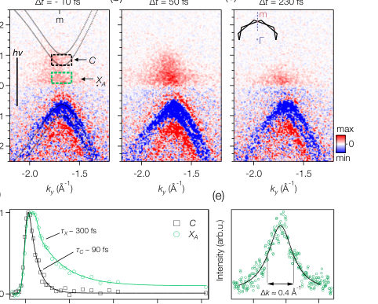
<figcaption class="paper-figure-caption"><b>Fig 1.</b> FIG. 2. (Color online) Excited electron and exciton dynamics at the m point of the mini Brillouin zone, where the vHs is located, in 9◦tBLG. (a)–(c) Photoemission intensity differ- ence plots obtained by subtracting an ARPES spectrum mea- sured 250 fs before the temporal overlap t0 of the pump and probe pulses from spectra measured at selected time delays ∆t = t −t0. The data were measured along the same mo- mentum path as in Fig. 1(d). In panel (a), the tight-binding band structure is overlaid as a black dotted line. A vertical bar indicates the pump photon energy. (d) Normalized pho- toemission intensity integrated over the dashed boxes of the same color in panel (a). Solid lines are fits...</figcaption>
</figure>
<figure class="paper-figure-card">
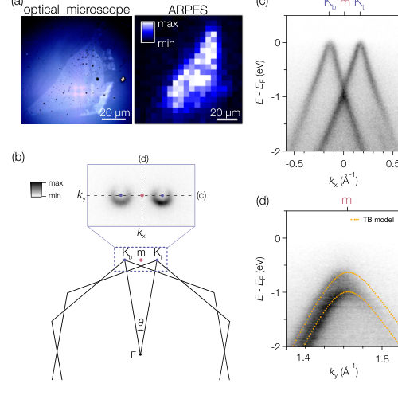
<figcaption class="paper-figure-caption"><b>Fig 2.</b> FIG. 1. (Color online) Characterization of the tBLG sample. (a) Optical image and photoemission intensity in an (E, k) re- gion of interest around the top-layer Dirac cone, measured at the Artemis TR-ARPES facility. (b) Photoemission intensity near the Brillouin-zone corner 300 meV below the Fermi en- ergy, together with a sketch of the two Brillouin zones. (c), (d) Photoemission intensity along the two dashed lines in panel (b), showing the electronic dispersion near the van Hove sin- gularity. The dotted orange lines in panel (d) show the band structure calculated using a tight-binding model. The data in panels (b)–(d) were obtained at the SGM-4 microARPES setup.</figcaption>
</figure>
<figure class="paper-figure-card">

<figcaption class="paper-figure-caption"><b>Fig 3.</b> FIG. 3. (Color online) Excited carrier dynamics at the Dirac cones of the top layer, bottom layer, and bare QFMLG. Dif- ference plots at ∆t = 150 fs near (a) Kt, (b) Kb, and (c) KQFMLG, where KQFMLG denotes the K point of the uncov- ered quasi-free-standing monolayer graphene on SiC.</figcaption>
</figure>
<figure class="paper-figure-card">

<figcaption class="paper-figure-caption"><b>Fig 4.</b> FIG. 4. (Color online) Time-dependent electronic temper- ature Te(t) for the top layer (blue) and bottom layer (red). Symbols are experimental data; solid lines are fits to the three- temperature model described in the text. The inset sketches the proposed ultrafast electron transfer from the top to the bottom layer in the built-in interlayer electric field ⃗E. The curved arrows indicate optical excitation, and the arrow be- tween the cones indicates interlayer electron transfer.</figcaption>
</figure>
<figure class="paper-figure-card">

<figcaption class="paper-figure-caption"><b>Fig 5.</b> FIG. 6. (Color online) Characterization of the twist angle. Constant-energy map measured 200 meV below the Fermi energy on the tBLG sample at the SGM-4 beamline using 70 eV photons with linear horizontal polarization. Red (blue) lines mark part of the hexagonal Brillouin zone of the top (bottom) graphene layer.</figcaption>
</figure>
</div>

<p><strong>Summary.</strong> This work uses time-resolved ARPES to probe exciton and carrier dynamics in twisted bilayer graphene. Key findings include the direct observation of a 'ghost-Fano' exciton and the demonstration that doping differences induce an ultrafast, field-driven energy transfer between the two graphene layers, leading to distinct electronic temperature profiles.</p>
<p><strong>Why it may be interesting.</strong> The study provides experimental evidence of non-equilibrium energy transfer and correlation effects (excitons) in a tunable 2D material system, which is highly relevant for understanding correlated electronic states in novel quantum materials.</p>
<details>
<summary>Detailed structure</summary>
<p><strong>Main problem.</strong> The study investigates the ultrafast dynamics of excitons and charge carriers in twisted bilayer graphene (tBLG) to understand energy relaxation mechanisms.</p>
<p><strong>Main result.</strong> The research identified a 'ghost-Fano' exciton signature and revealed an ultrafast, field-driven energy redistribution, causing the two graphene layers to reach significantly different peak electronic temperatures.</p>
<p><strong>Method.</strong> Time-resolved angle- and position-resolved photoemission spectroscopy (ARPES) was used, coupled with fitting models like the three-temperature model.</p>
<p><strong>Model / system.</strong> The system is twisted bilayer graphene (tBLG) on SiC at a specific twist angle. The analysis models carrier and energy relaxation using a three-temperature framework ($T_e, T_p, T_l$) and incorporates concepts like interlayer electric fields and excitonic resonances.</p>
<p><strong>Key observables.</strong> Exciton binding energy, exciton lifetime ($    au_X$), peak electronic temperatures ($T_e$), and the time evolution of these temperatures.</p>
<p><strong>Important parameters / regimes.</strong> Twist angle ($9 \pm 1^\circ$), doping offsets (e.g., 30 meV), and the interlayer electric field strength ($\approx 0.1 	ext{ V/nm}$).</p>
<p><strong>Assumptions / limitations.</strong> The analysis relies on fitting experimental spectra using the finite-slit Fermi-edge model and the three-temperature model, assuming the energy transfer is field-biased and ultrafast.</p>
<p><strong>Figures summary.</strong> Figures illustrate sample characterization, exciton/carrier dynamics at the van Hove singularity, and time-dependent electronic temperature evolution for the top and bottom layers, fitted to a three-temperature model.</p>
<p><strong>Paper structure.</strong> The paper progresses from characterizing the system and observing the exciton signature (ghost-Fano exciton) to analyzing the layer-dependent electronic temperature dynamics, culminating in the attribution of temperature asymmetry to interlayer energy transfer driven by doping differences.</p>
</details>
<details>
<summary>Abstract</summary>
<p>Twisted bilayer graphene (tBLG) on H-intercalated SiC (twist angle of $9 \pm 1^{\circ}$) is studied by position\mbox{-}, time\mbox{-}, and angle-resolved photoemission spectroscopy (ARPES). Both graphene layers are hole doped, with a Dirac-point offset of 30~meV. Time-resolved ARPES near the van Hove singularity reveals a spectral feature within the hybridization-induced band gap, together with excited electrons in the conduction band. The in-gap feature exhibits distinct dynamics, and its binding energy and $k$-space location are consistent with the proposed non-hydrogenic ``ghost-Fano'' exciton arising from destructive interference between two nearly degenerate excitonic channels. Near the Dirac points, the twist separates the largely layer-polarized Dirac cones in momentum space, providing direct layer selectivity. We find markedly different peak electronic temperatures in the two graphene layers, even though their subsequent cooling dynamics are very similar. We attribute this to an ultrafast interlayer redistribution of electronic energy, driven by an interlayer electric field that arises from the different doping in the layers.</p>
</details>
<p><sub><a href="#top">↑ back to top</a></sub></p>

<p><a id="paper-2610.17923"></a></p>
<h3 id="dynamical-bec-formation-and-vanishing-entropy-for-trapped-bosons-in-non-relativistic-qed-via-nonlinear-resonance-cascades"><a href="http://arxiv.org/abs/2610.17923v1">Dynamical BEC formation and vanishing entropy for trapped bosons in non-relativistic QED via nonlinear resonance cascades</a></h3>
<p><strong>Authors:</strong> Thomas Chen, Ali Mezher<br>
<strong>Type:</strong> theory · <strong>Category:</strong> quantum gases · <strong>PDF:</strong> <a href="https://arxiv.org/pdf/2610.17923v1">https://arxiv.org/pdf/2610.17923v1</a><br>
<strong>Analysis basis:</strong> full PDF text, analyzed in chunks
<strong>Topic relevance:</strong> <code>Keldysh / 2PI / non-Gaussian methods</code> <strong>2/5</strong> · <code>methods for driven-dissipative</code> <strong>2/5</strong> · <code>Tavis-Cummings &amp; cavity-many-emitter</code> <strong>1/5</strong> · <code>analog quantum simulation</code> <strong>1/5</strong> · <code>correlated / nonlocal dissipation</code> <strong>1/5</strong> · <code>driven-dissipative phase transition</code> <strong>1/5</strong> · <code>non-equilibrium universality</code> <strong>1/5</strong> · <code>quantum measurements</code> <strong>1/5</strong> · <code>scars &amp; prethermalization</code> <strong>1/5</strong></p>
<div class="figure-strip-hint">↔ Scroll figures horizontally</div>
<div class="paper-figures-scroll">
<figure class="paper-figure-card">
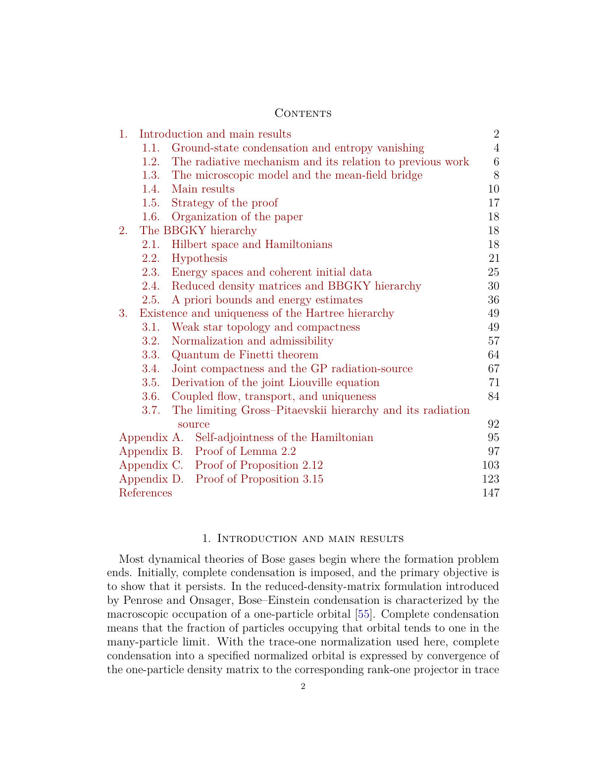
<figcaption class="paper-figure-caption"><b>Fig 1.</b> Low-resolution page preview, page 2</figcaption>
</figure>
<figure class="paper-figure-card">
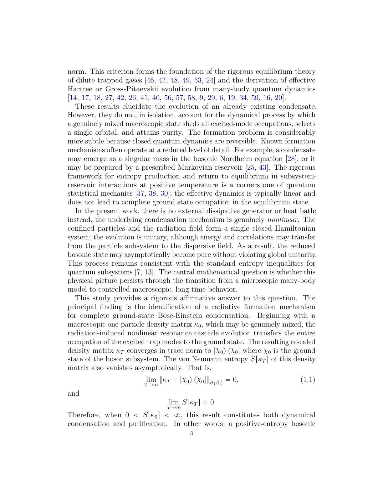
<figcaption class="paper-figure-caption"><b>Fig 2.</b> Low-resolution page preview, page 3</figcaption>
</figure>
<figure class="paper-figure-card">
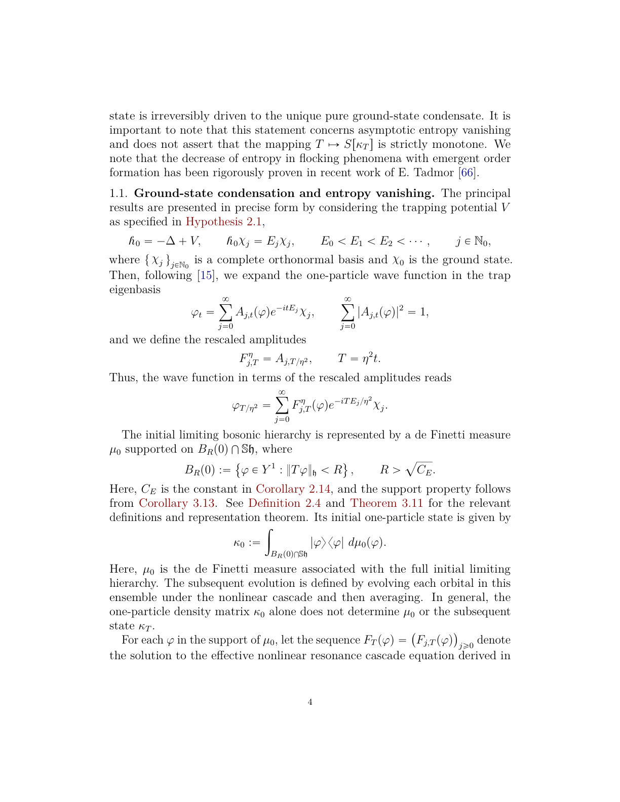
<figcaption class="paper-figure-caption"><b>Fig 3.</b> Low-resolution page preview, page 4</figcaption>
</figure>
<figure class="paper-figure-card">

<figcaption class="paper-figure-caption"><b>Fig 4.</b> Low-resolution page preview, page 5</figcaption>
</figure>
<figure class="paper-figure-card">
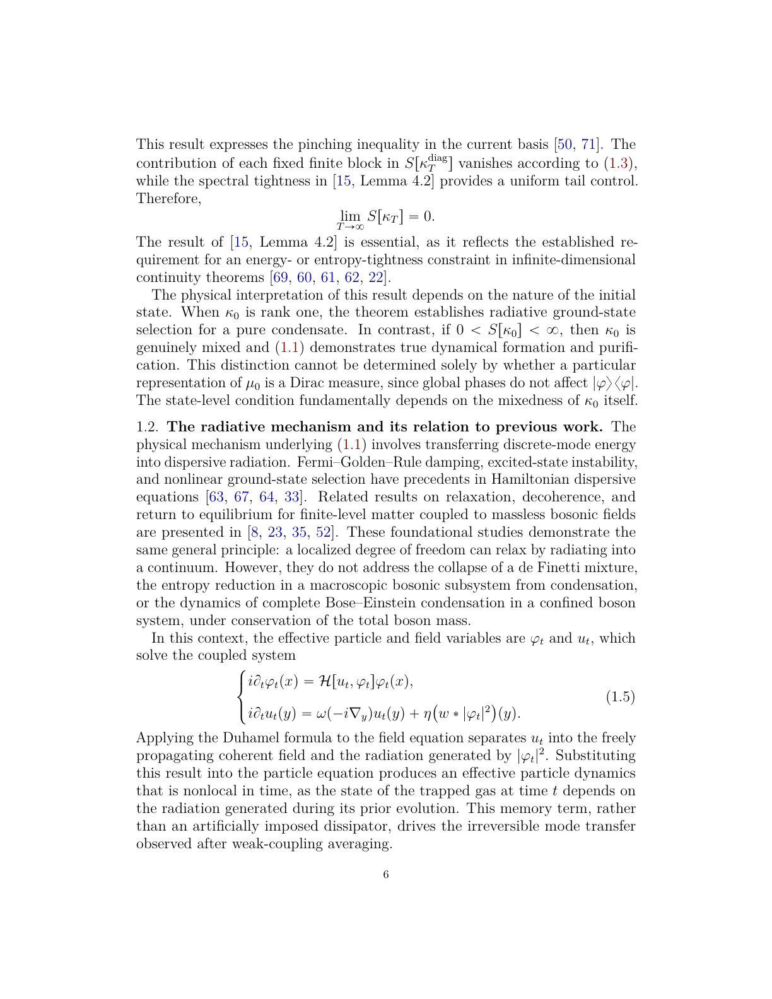
<figcaption class="paper-figure-caption"><b>Fig 5.</b> Low-resolution page preview, page 6</figcaption>
</figure>
</div>

<p><strong>Summary.</strong> This theoretical paper proves that trapped bosons coupled to a quantized radiation field undergo irreversible dynamical purification, regardless of their initial mixed state. By tracking the one-particle density matrix, the authors show that the system's entropy vanishes asymptotically, forcing the state into a pure condensate ground state. This establishes a rigorous mechanism for condensation driven by radiative relaxation in a quantum many-body setting.</p>
<p><strong>Why it may be interesting.</strong> This work provides a rigorous mathematical proof for the thermalization/purification process in a quantum system, showing how interaction with a continuum field drives the system towards a pure, condensed ground state, which is a key topic in quantum optics and many-body physics.</p>
<details>
<summary>Detailed structure</summary>
<p><strong>Main problem.</strong> The paper rigorously establishes the dynamical formation of a complete Bose-Einstein condensate (BEC) and the asymptotic purification of trapped bosons coupled to a quantized radiation field.</p>
<p><strong>Main result.</strong> It proves that any initially mixed, positive-entropy state purifies to the ground state, and the von Neumann entropy of the macroscopic one-particle density matrix vanishes asymptotically.</p>
<p><strong>Method.</strong> The analysis involves deriving the Hartree hierarchy from the BBGKY hierarchy and tracking the one-particle density matrix through a nonlinear resonance cascade while taking successive limits ($N 	o \infty$, weak-coupling, $T 	o \infty$).</p>
<p><strong>Model / system.</strong> The system consists of trapped bosons interacting with a quantized radiation field, governed by a closed, unitary Hamiltonian. The dynamics are analyzed via the macroscopic one-particle density matrix $\kappa_T$.</p>
<p><strong>Key observables.</strong> Macroscopic one-particle density matrix ($\kappa_T$) and its von Neumann entropy ($S[\kappa_T]$).</p>
<p><strong>Important parameters / regimes.</strong> Time ($T$), particle number ($N$), coupling strength ($\eta$), and the initial state's entropy ($0 < S[\kappa_0] < \infty$).</p>
<p><strong>Assumptions / limitations.</strong> Assumes a non-vanishing initial ground state component and strictly positive downward Fermi-Golden-Rule rates for the radiative relaxation process.</p>
<p><strong>Paper structure.</strong> The argument proceeds by defining $\kappa_T$ via the de Finetti measure $\mu_0$ over mean-field particle-field orbits, establishing convergence results by analyzing the nonlinear resonance cascade equation.</p>
</details>
<details>
<summary>Abstract</summary>
<p>The dynamical formation of a complete Bose-Einstein condensate and the asymptotic purification of trapped bosons coupled to a quantized radiation field are rigorously established. By tracking the macroscopic one-particle density matrix $κ_T$ through a nonlinear resonance cascade, it is demonstrated that radiative relaxation irreversibly depletes all excited trap modes, even when the initial macroscopic state $κ_0$ is genuinely mixed. Here $κ_T$ is an average, with respect to a de Finetti measure $μ_0$, over mean-field particle-field orbits, so that the mixedness of $κ_0$ reflects a statistical ensemble of orbits. Under the assumptions of a non-vanishing initial ground state component and strictly positive downward Fermi-Golden-Rule rates, strong trace-norm convergence to a pure condensate is proven, $$   \lim_{T\to\infty} \| κ_T-|χ_0\rangle\langleχ_0| \|_{\mathfrak{S}_1(\mathfrak{h})} = 0 \, . $$ Furthermore, the von Neumann entropy of the macroscopic one-particle density matrix is shown to vanish asymptotically, $$   \lim_{T\to\infty}S[κ_T]=0 \, , $$ without any claim of monotonicity in $T$. Thus, any initially mixed, positive-entropy state ($0<S[κ_0]<\infty$) is purified to the ground state $|χ_0\rangle\langleχ_0|$. For the proof, we derive the Hartree hierarchy of the coupled system of bosons and photons from the finite-$N$ BBGKY hierarchy of the microscopic quantum many-body system, establishing trace-norm convergence in the mean-field limit as $N\to\infty$. The limits are taken successively; first $N\to\infty$, then the weak-coupling limit, and finally $T\to\infty$. Although the global particle-field evolution remains unitary, the macroscopic one-particle state converges to a pure state as energy and correlations are continuously radiated into the dispersive field.</p>
</details>
<p><sub><a href="#top">↑ back to top</a></sub></p>

<p><a id="paper-2610.18750"></a></p>
<h3 id="finite-temperature-fredholm-determinants-for-dynamical-correlation-functions"><a href="http://arxiv.org/abs/2610.18750v1">Finite temperature Fredholm determinants for dynamical correlation functions</a></h3>
<p><strong>Authors:</strong> Oleksandr Gamayun<br>
<strong>Type:</strong> theory · <strong>Category:</strong> statistical mechanics · <strong>PDF:</strong> <a href="https://arxiv.org/pdf/2610.18750v1">https://arxiv.org/pdf/2610.18750v1</a><br>
<strong>Analysis basis:</strong> full PDF text, analyzed in chunks
<strong>Topic relevance:</strong> <code>Keldysh / 2PI / non-Gaussian methods</code> <strong>2/5</strong> · <code>methods for driven-dissipative</code> <strong>2/5</strong> · <code>non-equilibrium universality</code> <strong>2/5</strong> · <code>analog quantum simulation</code> <strong>1/5</strong> · <code>driven-dissipative phase transition</code> <strong>1/5</strong></p>
<div class="figure-strip-hint">↔ Scroll figures horizontally</div>
<div class="paper-figures-scroll">
<figure class="paper-figure-card">

<figcaption class="paper-figure-caption"><b>Fig 1.</b> Low-resolution page preview, page 2</figcaption>
</figure>
<figure class="paper-figure-card">

<figcaption class="paper-figure-caption"><b>Fig 2.</b> Low-resolution page preview, page 3</figcaption>
</figure>
<figure class="paper-figure-card">
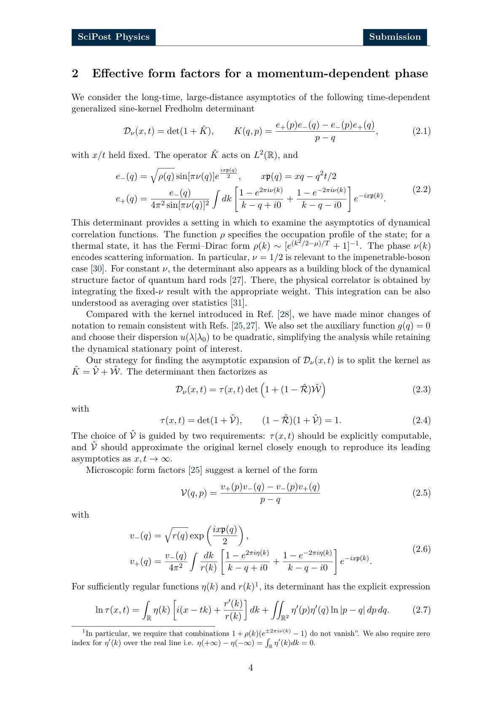
<figcaption class="paper-figure-caption"><b>Fig 3.</b> Low-resolution page preview, page 4</figcaption>
</figure>
<figure class="paper-figure-card">
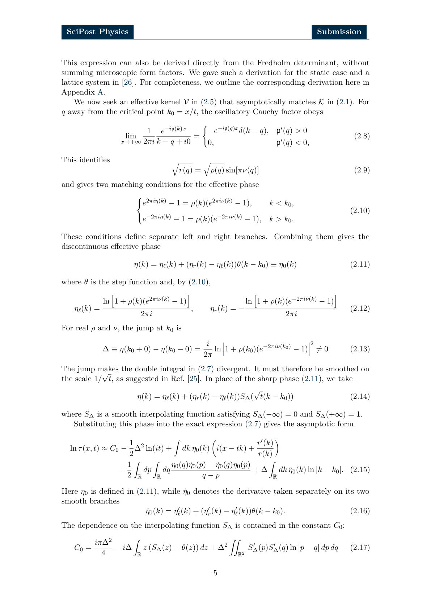
<figcaption class="paper-figure-caption"><b>Fig 4.</b> Low-resolution page preview, page 5</figcaption>
</figure>
<figure class="paper-figure-card">

<figcaption class="paper-figure-caption"><b>Fig 5.</b> Low-resolution page preview, page 6</figcaption>
</figure>
</div>

<p><strong>Summary.</strong> This work analyzes the long-time asymptotics of dynamical correlation functions using Fredholm determinants. By employing the Effective Form Factor method and solving associated Riemann-Hilbert problems, the authors determine the full asymptotic structure, including the transition profile. This provides a rigorous theoretical framework for calculating transport properties, such as the structure factor, in quantum many-body systems.</p>
<p><strong>Why it may be interesting.</strong> The techniques developed—using RHP and effective form factors to analyze determinants—are powerful tools for calculating correlation functions and transport properties in complex quantum many-body systems, relevant to non-equilibrium dynamics.</p>
<details>
<summary>Detailed structure</summary>
<p><strong>Main problem.</strong> The paper studies the long-time, large-distance asymptotics of finite-temperature dynamical Fredholm determinants used to calculate correlation functions in quantum many-body systems.</p>
<p><strong>Main result.</strong> The authors determine the effective phase shift and the transition profile joining its two branches, successfully recovering the generalized hydrodynamic prediction for the hard-rod dynamical structure factor.</p>
<p><strong>Method.</strong> The analysis employs the Effective Form Factor approach, combining Riemann-Hilbert problems (RHP) with nonlinear steepest descent to solve for the asymptotic behavior of the determinant.</p>
<p><strong>Model / system.</strong> The study concerns dynamical correlation functions, modeled via a generalized sine-kernel Fredholm determinant $D_
u(x, t) = \det(1 + \hat{K})$, applicable to systems like hard rods.</p>
<p><strong>Key observables.</strong> Dynamical structure factor, effective phase shift, finite normalization constant (Barnes factor).</p>
<p><strong>Important parameters / regimes.</strong> Long-time, large-distance limits ($x, t 	o \infty$), finite temperature, and the jump parameter $\Delta$.</p>
<p><strong>Assumptions / limitations.</strong> The derivation relies on approximating the kernel $\hat{K}$ with a solvable form $\hat{V}$ and solving the resulting Riccati equation using parabolic-cylinder functions.</p>
<p><strong>Figures summary.</strong> Not specified by the notes, but the analysis involves deriving explicit formulas for the asymptotic logarithm of the determinant and solving differential equations.</p>
<p><strong>Paper structure.</strong> The paper progresses by first establishing the asymptotic form of the determinant using the EFF method, then solving the associated differential equations (leading to parabolic-cylinder functions), and finally fixing the normalization constant by connecting to the high-temperature Gaussian $eta$ ensemble via RHP analysis.</p>
</details>
<details>
<summary>Abstract</summary>
<p>We study the long-time, large-distance asymptotics of finite-temperature dynamical Fredholm determinants using effective form factors. The method expresses these asymptotics as a functional of an effective phase shift. We determine its two branches on either side of a quadratic stationary point and the transition profile joining them. The profile is expressed through parabolic-cylinder functions. Its connection to the high-temperature Gaussian $β$ ensemble fixes the finite normalization, in agreement with an independent Riemann--Hilbert analysis. We also show that the leading exponential asymptotics suffice to recover the Euler-scale prediction of generalized hydrodynamics for the dynamical structure factor of hard rods.</p>
</details>
<p><sub><a href="#top">↑ back to top</a></sub></p>

<p><a id="paper-2610.18653"></a></p>
<h3 id="extending-the-mean-first-passage-time-formalism-to-the-reconstruction-of-high-free-energy-barriers-a-top-start-approach"><a href="http://arxiv.org/abs/2610.18653v1">Extending the mean first-passage-time formalism to the reconstruction of high free-energy barriers: A top-start approach</a></h3>
<p><strong>Authors:</strong> Ying Jiang, Ivan Saika-Voivod<br>
<strong>Type:</strong> theory · <strong>Category:</strong> statistical mechanics · <strong>PDF:</strong> <a href="https://arxiv.org/pdf/2610.18653v1">https://arxiv.org/pdf/2610.18653v1</a><br>
<strong>Analysis basis:</strong> full PDF text, analyzed in chunks
<strong>Topic relevance:</strong> <code>methods for driven-dissipative</code> <strong>2/5</strong> · <code>Keldysh / 2PI / non-Gaussian methods</code> <strong>1/5</strong> · <code>analog quantum simulation</code> <strong>1/5</strong> · <code>driven-dissipative phase transition</code> <strong>1/5</strong> · <code>non-equilibrium universality</code> <strong>1/5</strong> · <code>quantum measurements</code> <strong>1/5</strong></p>
<div class="figure-strip-hint">↔ Scroll figures horizontally</div>
<div class="paper-figures-scroll">
<figure class="paper-figure-card">
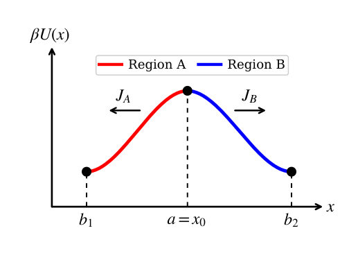
<figcaption class="paper-figure-caption"><b>Fig 1.</b> FIG. 1: Schematic representation of regions A and B relative to the common reflecting and initial position a = x0. Region A extends from a toward the absorbing boundary b1 &lt; a and carries a steady-state flux JA &lt; 0, whereas region B extends from a toward the absorbing boundary b2 &gt; a and carries a steady-state flux JB &gt; 0. The position a need not coincide with the free-energy maximum.</figcaption>
</figure>
<figure class="paper-figure-card">
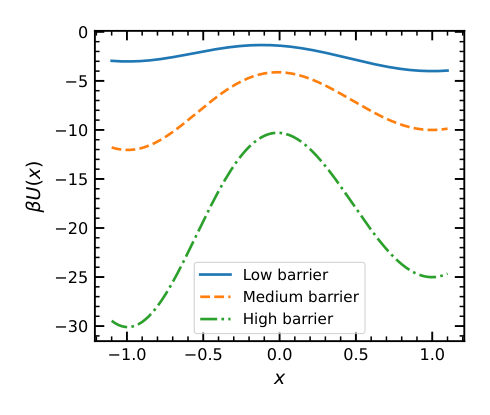
<figcaption class="paper-figure-caption"><b>Fig 2.</b> FIG. 2: Model double-well potentials used in the RW simulations for the low-, medium-, and high-barrier cases. The corresponding barrier heights, measured from the left-well minimum, are approximately 2, 8, and 20kBT, respectively.</figcaption>
</figure>
<figure class="paper-figure-card">
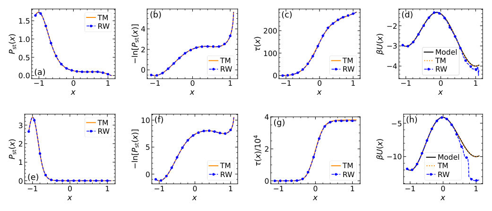
<figcaption class="paper-figure-caption"><b>Fig 3.</b> FIG. 3: Conventional MFPT reconstruction for the low- and medium-barrier model potentials. The first and second rows correspond to the low- and medium-barrier cases, respectively. From left to right, the columns show Pst(x), −lnPst(x), the MFPT τ(x), and the reconstructed free-energy profile βU(x). All the RW results are compared with TM calculations, while the reconstructed free-energy profiles are compared with the corresponding model potentials.</figcaption>
</figure>
<figure class="paper-figure-card">
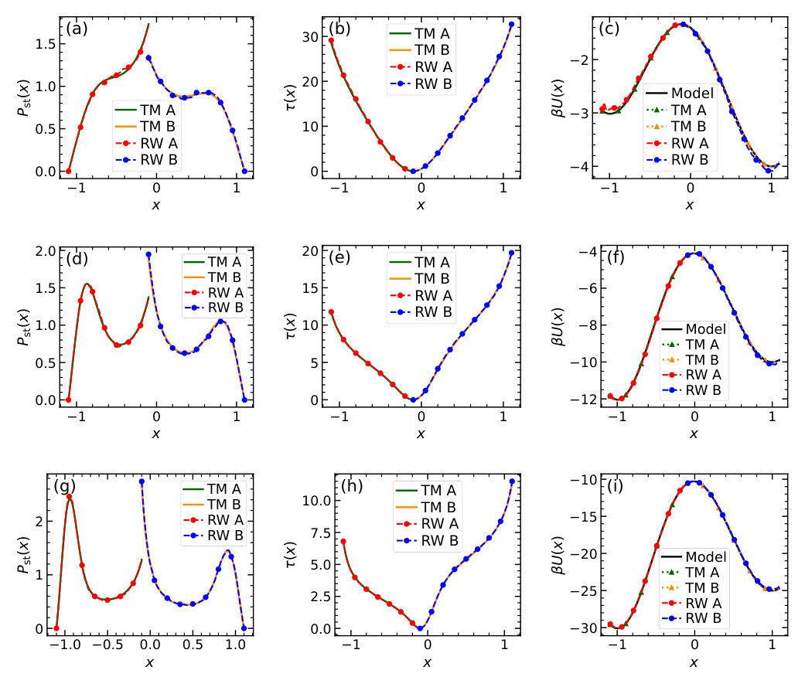
<figcaption class="paper-figure-caption"><b>Fig 4.</b> FIG. 4: Two-region reconstruction for the low-, medium-, and high-barrier model potentials. The rows correspond to increasing barrier height. From left to right, the columns show the region-specific steady-state distributions PA st(x) and PB st(x), the corresponding MFPTs τA(x) and τB(x), and the reconstructed free-energy profile βU(x). All the RW results are compared with TM calculations. In the free-energy panels, the model potential is compared with reconstructions obtained from the RW and TM quantities for regions A and B.</figcaption>
</figure>
<figure class="paper-figure-card">

<figcaption class="paper-figure-caption"><b>Fig 5.</b> FIG. 5: Top-start reconstruction for the low-, medium-, and high-barrier model potentials. The rows correspond to increasing barrier height. From left to right, the columns show the region-specific steady-state distributions PA st(x) and PB st(x), the corresponding MFPTs τA(x) and τB(x), and the reconstructed free-energy profile βU(x). The steady-state distributions and MFPTs obtained from the top-start RW trajectories are compared with TM calculations, while the reconstructed free-energy profiles are compared directly with the corresponding model potentials.</figcaption>
</figure>
</div>

<p><strong>Summary.</strong> This work extends the Mean First-Passage Time (MFPT) formalism to reliably reconstruct free-energy profiles across very high barriers. It introduces a "top-start" sampling technique that overcomes the inefficiency of waiting for rare spontaneous crossings. This method is validated using random-walk simulations and confirms its accuracy where conventional sampling fails.</p>
<p><strong>Why it may be interesting.</strong> While focused on classical statistical mechanics, the rigorous mathematical framework for rare event sampling and barrier crossing dynamics is foundational to understanding non-equilibrium processes in complex quantum systems, such as quantum tunneling rates or reaction rates in open quantum systems.</p>
<details>
<summary>Detailed structure</summary>
<p><strong>Main problem.</strong> The paper addresses the challenge of reconstructing high free-energy barriers from Mean First-Passage Time (MFPT) data, a task made computationally prohibitive by the rarity of spontaneous barrier crossings.</p>
<p><strong>Main result.</strong> A novel "top-start" extension to the MFPT formalism is introduced, which accurately reconstructs free-energy profiles even in the high-barrier regime by initiating trajectories near the barrier top.</p>
<p><strong>Method.</strong> The method leverages Markov-chain transition-matrix formulations to establish the equivalence between the top-start approach and conventional two-region constructions for calculating MFPTs and free-energy profiles.</p>
<p><strong>Model / system.</strong> The model involves a particle undergoing Brownian motion along a one-dimensional potential landscape, which is discretized and treated as a Markov process. The dynamics are governed by the Fokker-Planck equation in the continuous limit.</p>
<p><strong>Key observables.</strong> Mean first-passage time ($ au(x)$), steady-state distribution ($P_{st}(x)$), and the reconstructed free-energy profile ($eta U(x)$).</p>
<p><strong>Important parameters / regimes.</strong> The analysis covers low, medium, and high free-energy barrier regimes, with the inverse temperature $eta = 1/(k_B T)$ being a key parameter.</p>
<p><strong>Assumptions / limitations.</strong> The dynamics are assumed to be Markovian, and the reconstruction relies on the established relationships between MFPT, steady-state flux, and the potential energy landscape.</p>
<p><strong>Figures summary.</strong> Figures illustrate the decomposition of a top-start trajectory into region-restricted paths for different sides of a barrier, confirming the equivalence between the simulation method and theoretical region-specific calculations.</p>
<p><strong>Paper structure.</strong> The paper first establishes the theoretical basis using MFPT and steady-state flux relations, then introduces the top-start sampling technique, and finally validates this method using random-walk simulations across varying barrier heights.</p>
</details>
<details>
<summary>Abstract</summary>
<p>Rare events, such as crystal nucleation in mildly supercooled liquids, are characterized by waiting times that can be much longer than the timescale of the underlying microscopic dynamics. The mean first-passage time (MFPT) formalism [J. Wedekind and D. Reguera, J. Phys. Chem. B 112, 11060 (2008)] provides a route to reconstruct one-dimensional free-energy profiles from the MFPT and steady-state distribution measured along a reaction coordinate, but conventional implementations become inefficient for sufficiently high barriers because spontaneous crossings are rarely observed. We introduce a "top-start" extension that initiates trajectories near the barrier top and reconstructs the free-energy profile from their subsequent evolution away from the barrier toward lower-free-energy regions. We establish the equivalence between the top-start and two-region constructions using a Markov-chain transition-matrix formulation. We validate the method using one-dimensional random-walk simulations across low, medium, and high free-energy barriers, with transition-matrix calculations providing an exact benchmark for the corresponding discretized models. The top-start reconstruction remains accurate in the high-barrier regime where conventional MFPT sampling becomes prohibitively inefficient.</p>
</details>
<p><sub><a href="#top">↑ back to top</a></sub></p>

<p><a id="paper-2610.18495"></a></p>
<h3 id="steering-the-fidelity-in-state-preparation-on-noisy-bosonic-systems-with-risk-seeking-optimization"><a href="http://arxiv.org/abs/2610.18495v1">Steering the Fidelity in State Preparation on Noisy Bosonic Systems with Risk-Seeking Optimization</a></h3>
<p><strong>Authors:</strong> Riccardo Piantoni, Riccardo Pellini, Maurizio Ferrari Dacrema, Paolo Cremonesi<br>
<strong>Type:</strong> theory · <strong>Category:</strong> quantum information and computing · <strong>PDF:</strong> <a href="https://arxiv.org/pdf/2610.18495v1">https://arxiv.org/pdf/2610.18495v1</a><br>
<strong>Analysis basis:</strong> full PDF text, analyzed in chunks
<strong>Topic relevance:</strong> <code>methods for driven-dissipative</code> <strong>2/5</strong> · <code>quantum measurements</code> <strong>2/5</strong> · <code>analog quantum simulation</code> <strong>1/5</strong> · <code>correlated / nonlocal dissipation</code> <strong>1/5</strong> · <code>driven-dissipative phase transition</code> <strong>1/5</strong></p>
<div class="figure-strip-hint">↔ Scroll figures horizontally</div>
<div class="paper-figures-scroll">
<figure class="paper-figure-card">
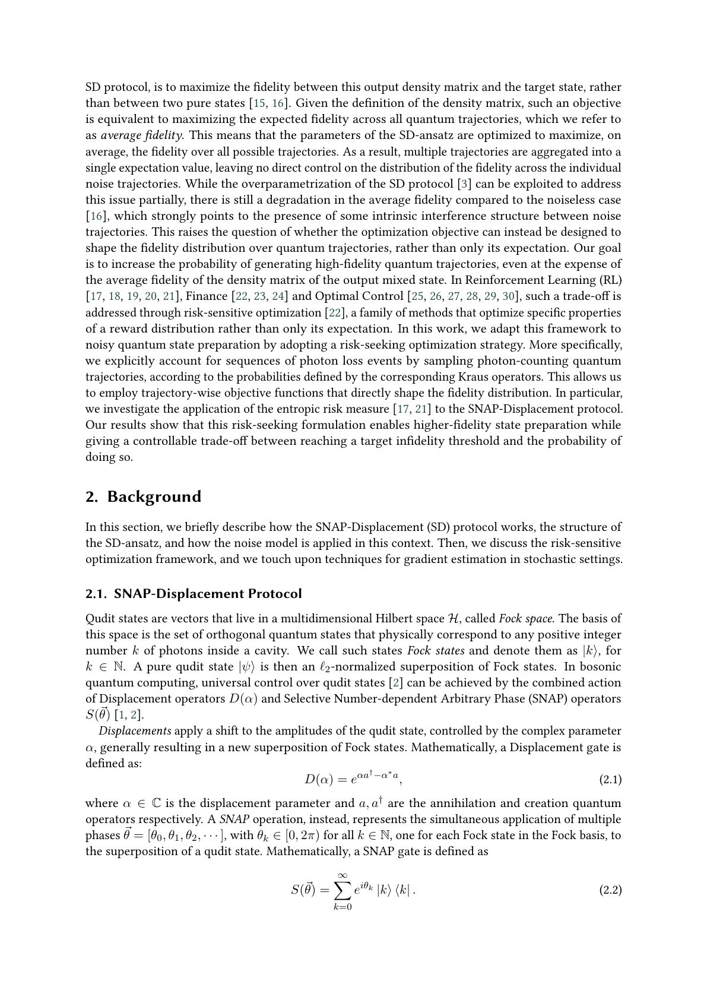
<figcaption class="paper-figure-caption"><b>Fig 1.</b> Low-resolution page preview, page 2</figcaption>
</figure>
<figure class="paper-figure-card">
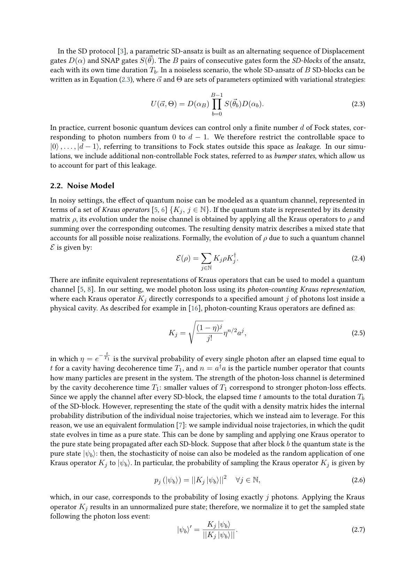
<figcaption class="paper-figure-caption"><b>Fig 2.</b> Low-resolution page preview, page 3</figcaption>
</figure>
<figure class="paper-figure-card">
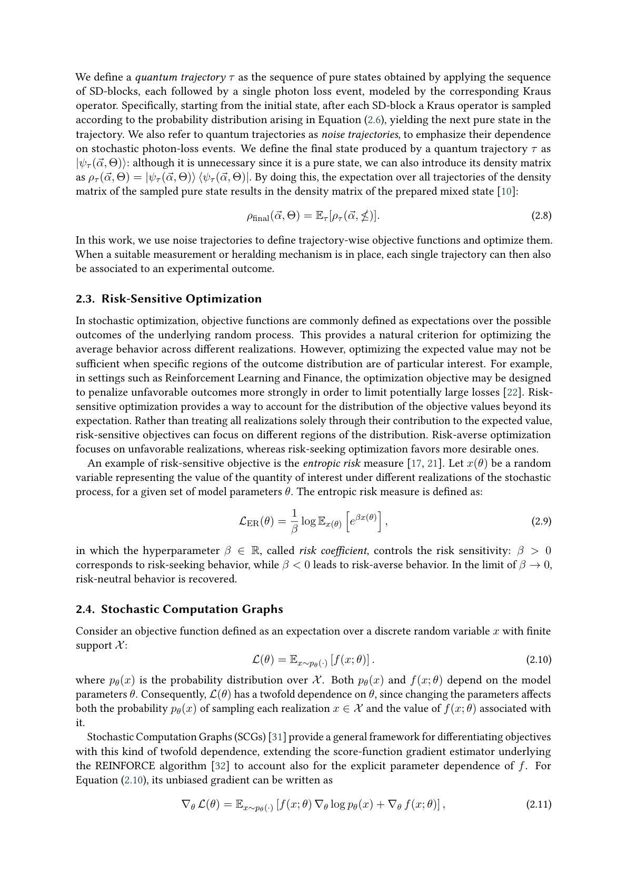
<figcaption class="paper-figure-caption"><b>Fig 3.</b> Low-resolution page preview, page 4</figcaption>
</figure>
<figure class="paper-figure-card">
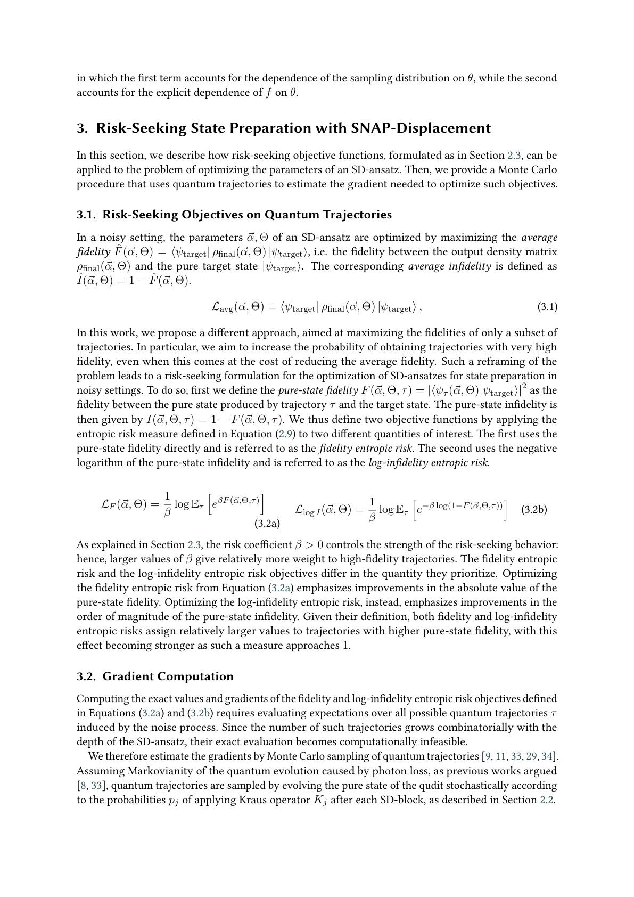
<figcaption class="paper-figure-caption"><b>Fig 4.</b> Low-resolution page preview, page 5</figcaption>
</figure>
<figure class="paper-figure-card">

<figcaption class="paper-figure-caption"><b>Fig 5.</b> Low-resolution page preview, page 6</figcaption>
</figure>
</div>

<p><strong>Summary.</strong> This paper proposes using risk-seeking optimization to improve state preparation fidelity on noisy bosonic quantum computers. Instead of maximizing the average fidelity, the method optimizes for the probability of achieving high-fidelity states by analyzing individual noise trajectories. This approach yields substantial improvements in state quality metrics compared to traditional average fidelity optimization.</p>
<p><strong>Why it may be interesting.</strong> This work directly tackles the practical challenge of noise in quantum computation by providing a mathematically rigorous framework (risk-sensitive optimization) to control the probability distribution of state quality, which is crucial for fault-tolerant quantum information processing.</p>
<details>
<summary>Detailed structure</summary>
<p><strong>Main problem.</strong> The paper addresses the limitations of standard state preparation methods for bosonic quantum computers, which only optimize the average fidelity when noise is present.</p>
<p><strong>Main result.</strong> Risk-seeking optimization techniques can significantly reduce the infidelities of specific pure states in the prepared ensemble by orders of magnitude compared to optimizing the average fidelity.</p>
<p><strong>Method.</strong> The authors adapt risk-sensitive optimization, using entropic risk measures, to optimize parameters by focusing on the distribution of fidelities across individual quantum noise trajectories rather than just their expectation value.</p>
<p><strong>Model / system.</strong> The study models state preparation on bosonic quantum systems (qudits) subjected to photon loss noise, utilizing the SNAP-Displacement (SD) protocol.</p>
<p><strong>Key observables.</strong> Fidelity (pure-state and average), $\epsilon$-probability (probability of achieving a certain fidelity), and Success Rate (SR).</p>
<p><strong>Important parameters / regimes.</strong> Risk coefficient ($eta$), noise parameters like cavity decoherence time ($T_1$), and the number of SD-blocks ($B$).</p>
<p><strong>Assumptions / limitations.</strong> The core assumption is that optimizing trajectory-wise objectives using risk measures is superior to optimizing the expectation value of the fidelity.</p>
<p><strong>Figures summary.</strong> The figures likely compare the performance metrics (e.g., $\epsilon$-probability vs. $eta$) obtained using standard average fidelity optimization versus the proposed risk-seeking objectives, demonstrating the trade-off control.</p>
<p><strong>Paper structure.</strong> The paper first establishes the problem with average fidelity optimization, then introduces risk-seeking optimization via entropic risk measures, details the Monte Carlo estimation of gradients for trajectory-wise objectives, and finally presents comparative results showing the benefits and trade-offs of different risk objectives.</p>
</details>
<details>
<summary>Abstract</summary>
<p>In order to execute quantum algorithms on bosonic quantum computers, it is necessary to encode their inputs into a desired target quantum state, with a process called state preparation. In real settings, state preparation methods operate in stochastic scenarios, where the prepared state is represented as a mixed state, that is a probabilistic ensemble of pure states. Therefore, existing state preparation methods optimize a variational ansatz by averaging over all possible sequences of photon loss events contained in the prepared ensemble, yielding an output state which approximates the desired target with a certain average fidelity. Such an approach, however, does not take into account directly the distribution of fidelities across states in the ensemble. In this work, we aim to maximize the fidelity of only a subset of pure states sampled from the prepared ensemble, at the cost of reducing the average fidelity overall. This trade-off is relevant when the goal is to obtain high-fidelity states with a certain probability, rather than maximizing the average fidelity of the prepared ensemble. We borrow and adapt objective functions from risk-sensitive optimization, a framework that optimizes specific characteristics of a distribution rather than only its expectation, and that has been successfully applied in Reinforcement Learning. In the considered experimental settings, our results show that the infidelities of some pure states in the prepared ensemble can be reduced by up to four orders of magnitude when using risk-seeking objectives, compared to those achieved using the standard optimization of the average fidelity. Furthermore, we show that it is possible to control the trade-off between the probability of obtaining high-fidelity states and the lowest infidelity threshold reached, providing the flexibility to select the operating point that best suits a certain application.</p>
</details>
<p><sub><a href="#top">↑ back to top</a></sub></p>
<hr>
<p>
<a href="index.html">← Index</a>
 · <a href="papers_02.html">← Previous</a> · <a href="papers_04.html">Next →</a>
</p>
<hr>

</body>
</html>
